LE ZODIAQUE ALCHIMIQUE Plan : introduction - I. position du problème - II. Le zodiaque alchimique [1. une vue de l'esprit - 2. les triangles allégoriques - 3. la revanche des décans] - III. les signes du zodiaque dans leur rapport à l'alchimie [1. généralités - 2. le zodiaque ; ses rapports avec les Quatre Eléments - 3. les signes : Bélier - Taureau - Gémeaux - Cancer - Lion - Vierge - Balance - Scorpion - Sagittaire - Capricorne - Verseau - Poissons] - Zodiaque [article Pernety du Dictionnaire mytho-hermétique] -
section en cours, le 7 avril 2013
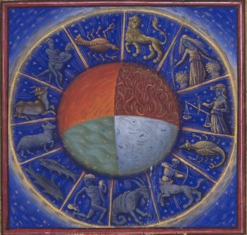
zodiaque, Barthelemy l'Anglais, De proprietatibus rerum, France, Le Mans, XVe siècle
- cliquez sur une des zones de l'image pour accéder à la section correspondante -
IntroductionCette section ne constitue qu'une brève introduction à l'étude des constellations, prises dans leurs rapports avec les allégories du grand oeuvre. Nous avons développé ce sujet au long des chapitres de l'Atalanta fugiens, auxquels nous reportons le lecteur. Il s'agit là d'une apostille à l'ensemble du commentaire de l'Atalanta fugiens. Voici en avant-propos un extrait des Recherches sur l'Histoire de l'Astronomie ancienne, de Paul Tannery [Gauthier-Villars, 1893] qui nous aidera à situer mieux dans un contexte historique la teneur de nos propos.
1. Lorsqu'une science est ancienne, le véritable sons du nom qui lui a été donné doit nous indiquer le groupe des notions usuelles au sein desquelles elle a germé. C'est ainsi que le terme géométrie nous apprend immédiatement que ce sont les opérations de l'arpentage et non, par exemple, les problèmes de l'architecture qui ont conduit aux premières spéculations sur les figures abstraites. Lorsqu'une science a changé de nom, les vicissitudes subies par sa désignation doivent révéler les transformations que le cours des âges a amenées dans la nature des questions agitées, dans le caractère des méthodes employées. C'est le cas de l'astronomie. Elle a repris, dans les temps modernes, son nom primitif, celui que, par exemple, Platon emploie encore exclusivement et dont nous allons tout à l'heure chercher à préciser la signification exacte. Mais Platon est déjà à une époque de transition, et, lorsque nous le voyons (Gorgias, 451 c) affirmer que l'astronome est affaire de raison (logoV), nous ne pouvons nous étonner si son disciple Aristote affecte d'employer seulement le terme d'astrologie.
2. Il n'y avait sans doute alors guère plus de deux siècles que l'expression démodée avait commencé à être employée; deux siècles après Aristote, celle d'astrologue est à son tour abandonnée par les savants. Hipparque affecte, à son tour, de dire mathématicien, et quand Ptolémée coordonnera dans son grand ouvrage les travaux de ses précurseurs, il évitera de même les désignations anciennes et il choisira comme titre celui de composition (ountaxiV) mathématique. A ces trois noms de la science correspondent trois périodes distinctes, que l'on peut brièvement caractériser comme suit : l'astronomie hellène ne s'occupe que de questions de calendrier, qu'elle surcharge toutefois de pronostics sur le temps; l'astrologie raisonne sur les astres, mais ne dépasse guère, au point de vue scientifique, les limites que nous assignons à la cosmographie; d'un autre côté, elle se met à l'école des Chaldéens et des Égyptiens pour la divination de l'avenir; enfin la mathématique nous représente la science procédant pour la première fois avec des instruments permettant des observations relativement précises et par des calculs présentant une rigueur au moins égale à celle des observations. Désormais la théorie des phénomènes célestes est entrée dans la voie défînitive, et ses progrès seront dès lors intimement liés aux perfectionnements successifs de l'observation et du calcul.
3. Nous allons successivement considérer ces trois périodes pour en expliquer plus complètement le caractère véritable et pour mieux faire comprendre comment s'accomplit l'évolution de l'une à l'autre. Pour l'histoire de la science antique, il serait sans grand intérêt de poursuivre plus loin l'élude approfondie de la vicissitude des désignations; il suffira d'ajouter ici quelques brèves indications. Si le terme général de mathématicien avait été adopté de préférence à celui d''astrologue, c'est sans doute que celui-ci avait déjà été diffamé par son application aux adeptes de la divination (Les principes de ce que nous appelons l'astrologie judiciaire ont toujours été vivement combattus, dans l'Antiquité, par les épicuriens et par les sceptiques). Si les véritables savants pouvaient se laisser aller aux mêmes pratiques et partager les mêmes croyances, ils tenaient au moins à ne pas être confondus sous un même nom avec les vulgaires charlatans qui spéculaient sur la crédulité humaine. Mais le temps arriva où le titre qu'ils affectaient ne sonna pas mieux que celui d'astrologue et prit on réalité la même signification; il devait dès lors tomber en désuétude, d'autant qu'à proprement parler, il était moins caractéristique. On revint tout d'abord au terme archaïque d'astronomie, qu'on retrouve par exemple dans Pappus, vers la fin du IIIe siècle de notre ère; mais il n'y eut plus d'astronomes : à cette époque de décadence, il n'y a plus de spécialités; le savant doit embrasser tout le cercle des connaissances humaines, et le nom qu'il revendique est celui de philosophe, que, du reste, Ptolémée s'attribuait déjà.La divination par les astres n'en reste pas moins un métier, et la croyance à la vérité de ses principes ne rencontre plus, sous le règne de la religion chrétienne, les contradictions qu'elle subissait auparavant. Aussi, pendant tout le Moyen Âge, astronomie et astrologie sont des termes réellement synonymes, et si, à la Renaissance, le premier est exclusivement adopté par les savants, c'est, au moins en partie, à la suite d'une erreur étymologique. On crut que dans la composition du mot entrait le radical de nomoV. loi; la science des lois régissant les astres ne sembla pas devoir porter un autre nom, et l'autorité chancelante d'Aristote ne put arracher a sa destinée le terme d'astrologie.
4. L'erreur que je signale est bien certaine, car le concept de loi, appliqué aux phénomènes d'ordre naturel, était d'autant plus étranger aux Hellènes que, pour eux, le terme de nomoV impliquait eux à celui de jusiV, nature. Ainsi ils pouvaient dire que les astres se mouvaient de telle façon d'après leur nature, ils ne pouvaient dire que ce fût d'après une loi. Mais il n'en est pas plus facile d'établir le véritable sens originaire du mot astronome. A la vérité, on peut, comme nous le verrons, préciser la signification exacte de ce mot dans les textes de Xénophon, de Platon ou de Théophraste; mais on semble alors déjà assez éloigné de l'époque de la formation primitive du mot, et, comme le radical qui s'y trouve adjoint à celui d'astre avait, pour les Grecs eux-mêmes, une signification passablement vague et flottante, les indications de l'étymologie ne peuvent conduire à une certitude absolue. De plus, on ignore si le mot primitif a été astronome, et non pas astronomie; car si les premiers qui se sont occupés de cette matière ont composé des écrits (hypothèse que nous aurons à examiner), il est fort possible qu'un titre comme astronomie ait été forgé par l'un d'eux et ait conduit à la formation du mot astronome, au lieu de la dérivation inverse. Suivant l'hypothèse à faire sur le mot primitif, on peut être conduit à lui attribuer des significations quelque peu différentes.
5. Essayons toutefois de remonter, d'après l'étymologie, au sens propre du mot astronome, et remarquons tout d'abord qu'en grec le terme astron (astre) s'applique spécialement (Les confusions réelles entre astron el asthr dans les textes grecs sont rares et généralement motivées par des raisons particulières) au Soleil, à la Lune et aux constellations des fixes, non pas à l'étoile (asthr) isolée ni, par conséquent, aux cinq planètes, dont les premiers astronomes hellènes n'avaient pas connaissance ou ne se préoccupaient pas. Homère parle d'Hesperos, l'étoile du soir, et il désigne clairement l'étoile du matin ; mais qu'il n'y eût là qu'une seule planète, les Hellènes ne le surent pas avant Pythagore. On attribue également au sage de Samos la connaissance des quatre autres étoiles errantes, qu'il appelait dans son langage mystique « les chiennes de Proserpine », mais les premières notions sur les limites de leur cours et la durée de leurs révolutions ne sont pas, en Grèce, antérieures a ?nopide de Chios (première moitié du Ve siècle avant notre ère), et ces premières notions, empruntées aux Égyptiens ou aux Syriens (c'est-à-dire aux Chaldéens, peut-être par l'intermédiaire des Phéniciens. L'origine étrangère est expressément affîrmée dans l'Epinomide (987 a), où il est dit en même temps que les Grecs n'ont pas de mots pour nommer les cinq planètes, et qu'ils les désignent en les attribuant à des divinités. Ces désignations ne semblent même pas encore bien établies et elles sont elles-mêmes empruntées, par assimilation des dieux de l'Orient a ceux de l'Hellade), ne furent pas du ressort de l'astronomie. Nous voyons en effet, à l'époque de transition où le terme d'astrologie commence a s'implanter, que Xénophon (Memor ,IV, 7) fait rejeter ces connaissances nouvelles par Socrate, qui s'en tient à l'astronomie pratique, tandis que l'auteur de l'Epinomide, représentant des tendances platoniciennes, prétend au contraire élargir et transformer le but de la science (Epin , 090 a ? Après avoir annoncé qu il va parler du moyen d'apprendre ce qui constitue la véritable piété, l'auteur, probablement Philippe le Locrien, qui prêche en tous cas une astrolatrie à base scientifique, continue en ces termes : « Ce moyen va paraître presque absurde, car je vais prononcer un mot que l'on n'attend pas dans l'ignorance ou l'on est de la chose, c'est le mot d'astronomie. On ne sait point que le véritable astronome doit être très éclairé ; il ne s'agit pas de celui qui fait de l'astronomie comme Hésiode et tous ses pareils, qui considère, par exemple, les couchers et les levers mais de celui qui, dans les huit périodes, connaît les sept » II veut parler, bien entendu, des révolutions des sept planètes rapportées au jour sidéral).
6. Si astre signifie constellation et si l'on prend au sens propre le radical nejo (je partage), il est clair qu'astronome veut dire étymologiquement « celui qui partage les astres, autrement qui groupe les étoiles en constellations ». Astronomie, terme qu'on peut alors considérer comme le plus ancien, signifierait de même « distinction des constellations (C'est l'explication de Suidas ) ». Toutefois, il faut observer que, lorsque le ciel eut été divisé, que les mots astronome et astronomie se furent éloignés du sens primitif que nous admettons ici, les Grecs leur substituèrent, à l'occasion de la formation de quelques nouvelles constellations ou de la réforme des anciennes, de nouveaux termes : astrothète, astrothésie. Dans un vers d'un hymne orphique (63, 2), qui date au plus tôt de l'époque alexandrine, par un singulier rapprochement qui ne peut que confirmer notre opinion, ce terme nouveau d'astrothète est employé comme épithète du Nomos céleste, auquel l'hymne est adressé (II est à peine utile de remarquer que le partage ou la distribution est l'acte social qui a fondé la propriété, et que, dès que celle-ci commença à se former, cet acte dut être consacré par des formes juridiques. Son importance prépondérante en fit naturellement étendre le sens à ces formes mêmes, aux règles suivies selon la coutume, puis suivant la loi écrite, quel que fût d'ailleurs l'objet de ces coutumes ou de ces lois. Dans l'hymne orphique cité, le sens du mot nomos a subi, bien entendu, son évolution complète.).
7. Pour justifier notre explication, il convient, avant tout, de rendre compte du but de la division du ciel par constellations, et de rechercher à quelle époque elle a été accomplie par les Hellènes. Sur le premier point, il nous suffira de citer in extenso le passage de Xénophon allégué plus haut (5) : « Socrate recommandait d'apprendre assez d'astrologie (On a proposé avec raison de lire astronomie, car ce qui suit est proprement une définition de l'astronomie, telle que les Hellènes l'entendaient au temps de Socrate. Mais il est très croyable que le nouveau terme était déjà introduit lorsque Xénophon écrivait, et cet auteur a pu très bien l'employer comme synonyme.) pour pouvoir connaître le moment (wra) de la nuit, du mois ou de l'année, en cas de voyage, de navigation ou de garde, ou pour tout ce qui se fait de nuit, dans le mois ou dans l'année; il s'agit, disait-il, d'avoir des repères pour distinguer les moments dans ces divers temps, mais il est facile de les apprendre des chasseurs de nuit, des pilotes et de bien d'autres personnes qui ont intérêt à les savoir (Xénophon continue comme suit : « Quant à apprendre l'astronomie jusqu'à connaître également ce qui ne suit pas le même mouvement de révolution, les étoiles errantes et sans règle, et à se fatiguer à rechercher leurs distances de la la terre, leurs périodes et les causes de tout cela, il en dissuadait fortement. » Xénophon, dans ce passage, paraît faire allusion aux travaux d'Eudoxe, bien postérieurs à Socrate.), »
L'astronomie, ainsi entendue, est chose purement populaire; mais on aperçoit nettement que la division du ciel en constellations a eu pour but la division du temps d'après le cours des astres; à savoir, d'une part, la division de la nuit en heures; de l'autre, celle de l'année en saisons. Quant au partage du mois, il découlait naturellement de l'observation des phases de la lune, les mois des Grecs étant réglés sur le cours de cet astre.
8. Différons pour le moment ce qui concerne les saisons, ce qui, comme nous l'avons dit et comme nous le montrerons amplement, est affaire de calendrier et fut, d'après les textes que nous invoquerons, le principal objet visé par les premiers astronomes. Considérons seulement la division de la nuit en heures. Quand Homère (Odyssée, V, 272-275) fait voguer le divin Ulysse de l'île de Calypso vers la terre des Phéaciens, il nous le montre contemplant « les Pléiades et le Bouvier lent à se coucher » avant « l'Ourse que l'on appelle aussi Chariot, elle qui tourne sur place, en se gardant d'Orion et seule n'a point de part aux bains de l'Océan ». Ajoutons les Hyades (l'upsilon au front du Taureau) et le Chien d'Orion (Hésiode connaît le nom de Sinus, comme aussi celui d'Arcturus, il convient d'observer que ce dernier, qui signifie proprement « Gardien de l'Ourse » et est synonyme d Arctophylax, a dû par suite s'étendre originairement à toute la constellation du Bouvier. C'était ce Gardien et Orion d'autre part qui étaient supposés empêcher l'Ourse de se baigner, c'est-a-dire de se coucher.); voilà toutes les constellations que semble connaître Homère. Il est probable que, de son temps, quelques autres étaient déjà nommées également, mais il est certain que la division du ciel, telle que les Grecs la connurent, ne s'effectua pas avant le cours des VIe et Ve siècles avant J.-C., et il convient de faire deux remarques.Tout d'abord, il est clair que les constellations homériques devaient être plus étendues que celles de l'âge postérieur; notamment, les premiers Grecs devaient, d'après les vers cités plus haut, étendre le nom d'Ourse à toutes les étoiles comprises dans le cercle de perpétuelle apparition. Si Thalès a réellement distingué la grande et la petite Ourse, Héraclite n'en employait pasmoins encore (fr. 35) le mot d'Arctos au sens homérique, comme le remarque Strabon d'après Hipparque. En second lieu, l'observation des constellations de la zone équatoriale citées par Homère pouvait évidemment, par une nuit tout entière sereine et pour quelqu'un assez exercé, suffire à connaître avec une certaine approximation l'heure de la nuit (Ceci suppose que l'on connaisse la direction du nord avec quelque précision.Mais c'est une fable alexandrine qu'avant Thalès les Grecs aient été, sous ce rapport, moins avancés que les Phéniciens, alors qu'Homère nous les montre naviguant de préférence pendant la nuit.). Mais quand on voulut réduire en théorie les pratiques des navigateurs, il fallut bien, de toute nécessité, multiplier les constellations. C'est alors qu'il put y avoir des astronomes, au sens que nous avons donné à ce mot.
9. Dès lors, pour décrire les constellations nommées, pour expliquer leur usage, il y eut sans doute des écrits, dont les premiers furent probablement composés en vers didactiques. Malheureusement nous n'avons guère d'indices de l'existence effective de pareils poèmes. Cependant les attributions hardies tentées par les faussaires alexandrins témoignent que de leur temps la tradition admettait cette existence.Sans parler d'une Sphère mise sous le nom de l'antique Musée, on attribua à Hésiode (Le fragment LXVII Lehes, énumération de cinq Hyades, rangé à tort sous une autre rubrique, appartient à ce poème, dit le scoliaste d'Aratus.) une Astronomie (Athénée, XI, p. 491), déjà connue d'Hygin (sous Auguste). La seule donnée précise qui nous en ait été conservée est due à Pline (XVIII, LVII, 5). L'auteur en aurait fait coïncider le coucher du matin des Pléiades avec l'équinoxe d'automne; à moins d'une mauvaise interprétation devers peut-être obscurs, il faudrait supposer que le faussaire aurait pris plaisir à exagérer l'ignorance du vieil aède d'Ascra; celui-ci, au reste, dans les Travaux, ne parle pas des équinoxes (En tout cas, cette prétendue astronomie d'Hésiode abordait la question des saisons. Ajoutons que Pline, dans le passage qui vient d'être cité, semble connaître aussi un ouvrage analogue d'Anaximandre, une Sphère, probablement apocryphe. ? Le petit poème connu sous le nom de Sphère d'Empédocle ne semble pas antérieur au Moyen Âge Byzantin). L'Astrologie nautique, attribuée à Thalès (ou à un Phocus de Samos, d'époque inconnue), n'est probablement pas plus ancienne que la prétendue Astronomie d'Hésiode; son titre même la rend suspecte.
10. La plus ancienne description de constellations que nous possédions est contenue dans le poème didactique d'Aratus de Soles, intitulé les Phénomènes. Cet auteur, qui n'était nullement astronome, a seulement versifié un ouvrage en prose composé un siècle auparavant, sous le même litre, par Eudoxe de Cnide (Ou, plus probablement, une réédition pour un climat un peu différent d'un ouvrage d'Eudoxe intitulé le Miroir et consacré au même sujet). Les constellations décrites, Aratus, suivant toujours Eudoxe, enseigne leur usage pour reconnaître l'heure pendant la nuit. Les indications données par le poète sont passablement grossières; Hipparque, dans le seul traité qui nous reste de lui et où il a pris la peine de corriger et de compléter ces indications (Exégèse des Phénomènes d'Aratus et d'Eudoxe dans l'Uranologion de Petau, Paris, 1630), nous apprend que celles d'Eudoxe n'étaient guère plus exactes. L'ouvrage prototype était donc essentiellement destiné à la pratique populaire, en particulier à l'usage des marins, pour des observations à la simple vue, et s'il répondait à un besoin réel, il avait sans doute été précédé par des essais du même genre, remontant à l'époque des astronomes primitifs.
11. Quoi qu'il en soit, c'est seulement dans le poème d'Aratus et dans le commentaire d'Hipparque que nous voyons se développer théoriquement la solution du problème pratique de la connaissance de l'heure pendant la nuit, d'après la simple inspection du ciel. Si ce problème nous était posé aujourd'hui, dans les mêmes conditions, il semble que nous chercherions à repérer des divisions égales de l'équateur. Les Grecs ont procédé tout différemment ; c'est que, suivant l'usage populaire, l'heure n'était nullement, comme pour nous, un laps de temps constant, fraction de la durée de la révolution journalière du soleil, mais une certaine fraction soit du jour, soit de la nuit, variable par conséquent en durée, comme le sont le jour et la nuit suivant les saisons.Ainsi, ce qu'il s'agissait d'évaluer approximativement, c'était la fraction écoulée de la nuit. Le moyen développé par Eudoxe et Aratus peut se résumer comme suit : chaque nuit, on voit se lever (et aussi bien se coucher) une étendue du zodiaque correspondant à cinq signes. Le signe (douzième du zodiaque) au milieu duquel se trouve le soleil est invisible (en crypsis, disaient les Grecs); le signe opposé (le douzième au-dessus de l'horizon du levant lorsque le soleil est couché) reste visible toute la nuit. Voilà le point de départ d'une division approximative suffisante pour les besoins de la pratique. Pour faciliter l'observation qui se fait simplement à l'horizon, il convient d'avoir le dénombrement des astres qui se lèvent ou se couchent pendant que chaque signe du zodiaque se lève ou se couche. C'est sur ce dénombrement qu'insiste Aratus, et c'est précisément ce qui représente, à proprement parler, ce que les Grecs appelaient du terme technique de phénomènes, quand ce terme ne désigne pas, comme dans le traité euclidien de ce titre, les règles théoriques applicables à cette matière.
12. La solution dont nous venons d'indiquer le principe, et qui en tout cas remonte à Eudoxe, suppose la division complète du zodiaque en douze signes égaux ou supposés tels. Or, cette division n'est pas antérieure en Grèce à Oenopide de Chios (Elle lui est expressément attribuée par Eudème de Rhodes (fr. 9V), disciple d'Aristote et premier auteur d'une Histoire astrologique.) et fut d'ailleurs très probablement importée, de même que la connaissance des planètes. [...]
Grandes heures du Duc de Berry - l'homme zodiacal
Le Zodiaque est une ceinture de douze constellations qui traverse la voûte céleste, proche de l'écliptique, route apparente suivie par le Soleil, la Lune et les planètes de notre système solaire. Les constellations, ou signes, du zodiaque représentent, traditionnellement, les quatre éléments primordiaux : l'air, le feu, l'eau et la terre. Elles correspondent également aux plus anciennes constellations identifiées. En Asie, sur les rives du Tigre et de l'Euphrate vécut le peuple des Chaldéens qui parait s'être élevé le premier aux contemplations célestes. Du moins les plus anciennes données astronomiques que nous possédions viennent de lui. Le beau climat de la Mésopotamie, avec ses nuits sereines et merveilleusement étoilées dont l'Orient a le privilège, y fut admirablement favorable. Les renseignements que l'on possède sur les anciens habitants de ce pays, Babyloniens, Chaldéens, Assyriens, renseignements pris sur les briques ou tablettes d'argile couvertes de signes cunéiformes et mises à jour par les fouilles poursuivies depuis un siècle sur l'emplacement des anciennes cités de la Mésopotamie, ont révélé quelle place immense tenait en ce pays l'observation des astres. La civilisation babylonienne remonte au moins 4000 ans av. J.-C. On a retrouvé à Ninive les fragments d'un grand traité d'astrologie compilé pour Sargon l'Ancien, dont la vie se place vers 3800. Les observations, d'abord empiriques, poursuivies pendant des milliers d'années et perfectionnées graduellement, permirent aux Babyloniens des derniers siècles av. J.-C. d'arriver à des connaissances d'une étonnante exactitude scientifique, dont les Grecs ont tiré grand parti. Dans cette immense période, la manière de mesurer le temps a présenté des changements qu'il est encore difficile de suivre. Bien qu'on puisse distinguer les Babyloniens, les Chaldéens, les Assyriens et les Chaldéo-Assyriens, nous nous contenterons d'indiquer ici ce que l'on sait sur le calendrier de la civilisation chaldéenne, laquelle s'identifie avec celle du peuple babylonien tout entier.
Les Chaldéens notèrent les mouvements des astres, dressèrent des tables, donnèrent des noms, et leurs observations codifiées formèrent le premier livre d'astronomie. Ils connaissaient non seulement les mouvements du soleil et de la lune, mais ceux des cinq principales planètes, les éclipses, la précession des équinoxes, la division du cercle en trois cent soixante parties ou degrés, celle du degré en soixante minutes, de la minute en soixante secondes et de la seconde en soixante tierces. Les Chaldéens connurent le gnomon et le cadran solaire. Avec eux nous assistons à la création des bases du calendrier. La division de l'écliptique en douze parties égales constituant le zodiaque, et ses figures ou catastérismes, sont d'origine chaldéenne. [-800 av. J.-C. : première mention par les Chaldéens de la bande zodiacale (qui délimite la course apparente des planètes autour de la Terre) ; -500 av. J.-C. : le zodiaque est divisé par les Chaldéens en douze parties égales appelés « Signes ». 1er siècle ap. J.-C. : les Signes du zodiaque sont classés en cardinaux, fixes et mutables et les Maîtrises planétaires (à chaque planète correspond un Signe qu'elle gouverne) sont établies. ]
Dans son mouvement annuel apparent, le soleil décrit une ligne sur la sphère céleste, appelée écliptique parce que c'est sur cette ligne que se produisent les éclipses. Si l'on prend de chaque côté de cette ligne huit degrés, on obtient une bande céleste de seize degrés de largeur découpée dans la voûte du ciel. Cette bande est parcourue, dans son milieu par le soleil, et dans le reste de sa surface, par les planètes qui, en général, ne sortent pas de cette zone. Or, pour indiquer commodément l'endroit où se trouvait le soleil dans cette région céleste, les astronomes chaldéens partagèrent la bande dans sa longueur en douze parties égales, ayant chacune un douzième, c'est-à-dire trente degrés de la sphère qui en a trois cent soixante. Ils donnèrent ensuite aux étoiles qui se trouvent dans chacune de ces douze parties des noms qui furent surtout des noms d'animaux, d'où son nom de zodiaque (de zwdia, animaux) .Ces noms tirent leur origine de ce qu'il y avait, dans les phénomènes du ciel et de la terre, de plus frappant au moment où le soleil était dans chacune des douze parties. Ainsi on appela Bélier, ou signe du Bélier ou astres du Bélier, la partie dans laquelle se trouve le soleil à l'époque où naissent les agneaux ; astres du boeuf ou taureau ceux sous lesquels il était temps d'atteler cet animal à la charrue pour labourer la terre; astres du cancer ou de l'écrevisse ceux sous lesquels le soleil, parvenu au milieu de l'année, commençait à rétrograder, comme l'écrevisse qui marche à reculons ; astres du lion ceux où cet animal se montrait près des villes ; astres du Verseau, la saison des pluies ; astres de la balance ceux auxquels les jours égalent les nuits ; du sagittaire le moment de faire la chasse aux bêtes féroces, etc.
Deux vers latins du poète Ausone mentionnent ces douze signes du zodiaque:
Sunt : Aries, Taurus, Gemini, Cancer, Leo, Virgo,
Libraque, Scorpius, Arcitenens, Caper, Amphora, PiscesLes plus anciens zodiaques plaçaient en tête le signe du taureau. C'était le signe équinoxial depuis l'an 4300 environ avant notre ère; il l'a été jusqu'en 2150 av. J.-C. C'est probablement à cette première époque que les contemplateurs du ciel ont dressé la carte du zodiaque, car dans les anciens mythes religieux, le taureau est associé à l'oeuvre féconde du printemps, qui ramène, avec l'action du soleil sur la terre, le retour de la végétation et des fruits. L'équinoxe de printemps arrivait en effet dans le signe du taureau à cette époque antique. En vertu de la précession des équinoxes, il arrive successivement dans tous les signes, en une période d'environ 25000 à 26000 ans. A partir de l'an 2150 avant notre ère, l'équinoxe de printemps a eu lieu dans le signe du bélier. Depuis le premier siècle de notre ère jusqu'à aujourd'hui, c'est dans le signe des poissons. Il passera bientôt dans le verseau. A côté des notions exactes d'astronomie, il y avait dans la science des Chaldéens tout un mélange d'astrologie. Ils appelaient les douze signes du zodiaque les « seigneurs des dieux » ; les planètes étaient les « interprètes » ou antennes qui servaient, pour ainsi dire, de relai entre les dieux et le monde sub-lunaire. Les astrologues chaldéens passaient leur temps à des observations sidérales et s'appliquaient à régler leur vie d'après les instructions qu'ils croyaient lire dans le ciel. La plupart des sciences divinatoires d'aujourd'hui ont leur origine dans l'astrologie chaldéenne.
C'est un texte cunéiforme de 419 av. J.-C. qui énumère pour la première fois les 12 signes du zodiaque. Mais en fait, la connaissance de certaines constellations semble beaucoup plus ancienne puisqu?elle remonterait à 1700 av J.-C. (à l?époque du roi babylonien Hammourabi). Il faut noter aussi qu'il existait une autre version du zodiaque vers 700 av J.-C., dite de « la voie de la Lune », formée de 15 constellations sans le Bélier. Rappelons que le zodiaque tropical (utilisé par les astrologues) diffère en ceci du zodiaque sidéral qu'il n'est pas affecté par la précession des équinoxes mais il faut reconnaître que les Babyloniens travaillaient avec un zodiaque sidéral. Après la découverte par Hipparque du phénomène dit de la précession des équinoxes (IIe siècle av. J.-C.), les astrologues se servirent du zodiaque tropical. Pour nous, en astrologie, il sert simplement à situer la Terre dans son déplacement annuel par rapport au Soleil : il débute par convention au 0° Bélier, appelé aussi point vernal (point g) qui coïncide avec l'équinoxe de Printemps. En alchimie, l'équinoxe de Printemps est l'époque consacrée au début du Grand oeuvre ainsi que s'accordent à l'affirmer les plus grands maîtres de l'art. Limojon de Saint-Didier y a même consacré le frontispice de son ouvrage Le Triomphe hermétique .
Limojon de saint Didier : Le Triomphe hermétiqueIl est pour nous hors de doute que le zodiaque astrologique constitue une pure fiction, une chimère totale. Aucune statistique, depuis plus de cent ans, n'a jamais pu mettre en évidence la moindre anomalie significative, se rapportant à quelque facteur « astrologique » que ce soit, en liaison avec un individu [astrologie judiciaire] ou un ensemble donné [astrologie mondiale]. Tout ce que les astrologues disent à leur clients relèvent de la subjectivité la plus pure : pour certains, qui sont honnêtes, voilà des manières qui relèvent plus de la psychologie que de l'astrologie à proprement parler. [voir là-dessus Jung, Synchronicité et Paracelsica, trad. Albin Michel, 1988] Il est de fait que les astrologues exercent alors une activité qui n'est pas loin d'avoir une réelle utilité. D'autres ressemblent aux souffleurs alchimiques : ce sont des mercantis et des malhonnêtes. Nous en connaissons un certain nombre qui se targuent même de pratiquer de l'astrologie « scientifique » alors qu'il n'ont pas la plus petite idée d'un test statistique et de ses conditions d'emploi. Enfin, une autre catégorie est à classer parmi les néo Chaldéens humanistes et fins lettrés qui se targuent d'associer des concepts flous, divers et qui sont mixés dans une sorte d'étrange « compost » d'où rien de positif ne peut être tiré. Nous considérons qu'il s'agit là d'ésotérisme de bas aloi, qui n'a nul rapport avec les bases sur lesquelles fut établi l'hermétisme tel qu'il ressort des travaux de Festugière [La Révélation d'Hermès Trismégiste, 3 vol., Les Belles Lettres, 1990]. A ces travaux, il faudrait ajouter ceux de Bouché-Leclercq, qui, dans son Astrologie Grecque, avait magistralement montré les rapports étroits qui existaient entre l'hermétisme et l'astrologie.
En résumé : les tentatives d'explication de types caractériels donnés ou de traits de personnalité soi-disant en rapport avec les signes du zodiaque se révèlent absolument inexistants et n'ont de rapport avec l'individu que pris dans un contexte très précis : la consultation astrologique envisagée comme séance de psychothérapie masquée.Et c'est là où le fonds des idées hermétiques les plus anciennes et les plus assurées surgit dans toute sa lumière pour être replacé dans son contexte approprié : l'alchimie. Tout, en effet, dans le zodiaque, montre que le découpage s'applique à l'ensemble du magistère, tant dans le voisinage des signes [l'aspect congénère de certains signes ne peut s'expliquer qu'au vu de l'étude des périodes du magistère] que dans les rapports de signe à signe éloignés.
1)- une vue de l'esprit : la disposition des signes du zodiaque en secteurs de 30° d'écliptique chacun ne repose sur aucun fondement rationnel, envisagé du point de vue de l'astrologie. Le découpage de chaque signe en décan fait davantage penser aux cartes de tarot [voir notre tarot alchimique] et relève de méthodes divinatoires semblables. C'est donc autre chose que ceux qui ont ainsi délimité les secteurs zodiacaux avaient en vue. De nombreux textes alchimiques laissent à penser que ces signes seraient des indicateurs de certaines époques du grand oeuvre alchimique. En cela, il s'agit d'une pure vue de l'esprit qui ne peut se concevoir de manière rationnelle qu'envisagée sous l'espèce de l'allégorie et de la parabole.
2)- les triangles allégoriques : on sait que les signes zodiacaux sont liés entre eux par une tradition séculaire selon un découpage qui peut être « quaternaire » [regroupements en quatre triangles : 4 x 3 = 12] ou « ternaire » [regroupements en trois carrés : 3 x 4 = 12]. Nous avons utilisé le découpage quaternaire et proposons ici une nouvelle ventilation des signes, plus conformes à la logique, que celle qui prévalait jusqu'alors, au vu de nos recherches alchimiques. Il nous est apparu ainsi, d'opposer aux trois signes de feu [Bélier - Lion - Sagittaire] qui forment la base du symbolisme alchimique, les trois signes d'eau inversés par rapport à la tradition, en reconstituant l'hexagramme de Salomon [Taureau - Vierge - Poissons]. Selon le même procédé, nous avons été conduits à poser en signes d'air le triangle [Cancer - Scorpion - Poissons] et en signes de terre le triangle [Taureau - Vierge - Capricorne]. L'ensemble s'est révélé très satisfaisant, au regard de la doctrine hermétique appliquée à l'alchimie.
3)- la revanche des décans : le zodiaque, comme nous l'avons dit, n'est qu'une pure vue de l'esprit et des constellations n'appartenant pas au zodiaque sont en fait traversées par l'écliptique sur une surface supérieure à certaines constellations du zodiaque. Il paraît donc bien difficile d'admettre qu'elles ne soient pas, elles aussi, prises en compte en astrologie : ce n'est pas le cas. Dans le domaine de l'hermétisme lié à l'alchimie, ces sous-ensembles constellés s'avèrent au contraire des plus précieux à étudier. En général, l'expérience montre qu'ils permettent d'étendre le symbolisme lié aux constellations zodiacales et, en outre, qu'ils donnent de précieux renseignements sur de nombreuses allégories du magistère.
III. Les signes du zodiaque dans leur rapport au grand oeuvre
Il est évident qu'il ne s'agit pas de trouver des correspondances entre des substances chimiques et les signes du zodiaque. Tout comme les récits mythologiques, les fables et les légendes, nous devrons effectuer à chaque fois des interpolations et montrer par l'allégorie ou la parabole en quoi ces constellations, agencements arbitraires d'étoiles établis par les Anciens [étoiles qui sont en général séparées, bien sûr, par des milliers d'années lumière], peuvent nous éclairer dans notre quête et être l'objet de « pré textes » à l'instar des Demeures Philosophales. Car il s'agit bien de demeures philosophales. Au lieu de pierres, de tableaux lapidaires, de caissons encorbellés, de sculptures, d'ogives créés de main d'homme, nous sommes confrontés à des créations spirituelles où éclate l'imaginaire et le besoin qu'a l'homme, depuis qu'il est tel, de trouver des explications à sa condition de mortel et de lancer des antennes vers le divin c'est-à-dire vers lui-même en ce qu'il a de plus enseveli, où , finalement, il se trouve confronté avec ses propres angoisses et ses questions irrésolues : le zodiaque et, de façon générale, toute la voûte céleste, se révèle, à cet égard, le plus grand test de Rorschach du monde : l'homme paraît tenir l'univers dans le rayon de son esprit.
2)- le zodiaque - les Quatre eléments - les regroupements de signes
Plusieurs textes alchimiques se sont servis du zodiaque comme hiéroglyphes hermétiques. l'un des plus célèbres est le traité du sieur Esprit Gobineau de Montluisant : Explication Très curieuse des Enigmes et Figures Hiéroglyphiques, physiques, qui sont au grand portail de l'Eglise Cathédrale et Métropolitaine de Notre-Dame de Paris. Ce texte a été commenté. Il a sans doute servi en grande partie de base au Mystère des Cathédrales de Fulcanelli [où une influence de l'Hypotypose de Pierre Dujols se fait sentir]. A la lumière des développements que nous avons été conduit à émettre au long de l'analyse des cinquante chapitres de l'Atalanta fugiens, il nous paraît utile de revenir sur certains arcanes de ce traité.
Celui qui a quelque connaissance en astrologie verra tout de suite que, dans les Entretiens de Calid à Morien, Calid nomme le triangle de feu constitué des signes dits positifs, correspondant aux qualités de chaud, sec et qui renvoient par tradition à un tempérament colérique, aux réactions violentes et rapides. L'artiste doit savoir, ici, bien diriger son feu car si les qualités reconnues à la triplicité de feu sont le courage, la hardiesse et l'énergie, les défauts [violence, précipitation, véhémence, impatience, imprévoyance] pourraient s'exprimer de façon fatale et les fleurs, se trouver brûlées. Le Bélier ou Ariès est le signe de la Toyson d'or [Soufre blanc] ; le Lion est le signe du soleil [Soufre rouge] ; enfin, le Sagittaire est le signe dédié à Jupiter [l'Aigle : accretion du Soufre à la toison d'or]. A ce triangle de feu, répond le triangle d'eau avec le Cancer [Lune], le Scorpion [venin ioV chaux métalliques] et les Poissons [bain des astres] où s'exprime la dissolution. Au triangle d'eau répond le triangle de terre : Taureau [Vénus-Aphrodite], Vierge [Mercure] et Capricorne [Saturne]. Enfin, nous avons le triangle d'air, avec : Gémeaux [double Mercure], Balance [Justice à Thémis] et Verseau [Saturne]. Toutefois, ce schéma n'apparaît pas satisfaisant et nous nous devons de manifester quelque perplexité à nos lecteurs. Que vient faire la Vierge dans un signe de Terre ? et le Verseau dans un signe d'air ? Et Fulcanelli n'a-t-il pas dit que les cartes avaient été sciemment mélangées par les Adeptes... Il nous faut donc reprendre ce schéma à la base, à partir du texte de Calid. Posons d'abord que le triangle de feu obéit à la logique interne du schéma hermétique. Cela est possible puisque les trois signes envisagés sous ce triangle procèdent des Soufres et de leur accretion ou conjonction. Cette opération -la conjonction radicale des deux soufres- nécessite le feu des Sages et le symbolisme apparaît logique. Si nous prenons à présent la digamma de Salomon [cf. lut de sapience], nous voyons que le signe d'eau est opposé au triangle de feu, ce qui là encore est naturel. Si l'on se reporte à la figure ci-dessus, en toute logique, les signes d'Eau doivent donc être : le Verseau, les Gémeaux et la Balance [bleu]. De même, les trois signes de Terre seraient : le Taureau, le Capricorne et la Vierge [marron] ; puis les signes d'Air sont : le Cancer, le Scorpion et les Poissons [vert]. Examinons à présent la cohérence du système et analysons d'abord le triangle d'Eau :
Eau : il est constitué du Verseau, des Gémeaux et de la Balance. La figure du Verseau nous montre d'habitude un sage vieillard porteur d'une ou de deux amphores ; et ces urnes ou amphores inclinées répandent le flot de l'eau [mais on dit qu'il s'agit d'un signe d'air parce que l'on prétend que la liquidité de ce flot est toute aérienne et éthérée et que ce milieu procède des eaux de l'air répandues par les ondes]. Ce signe est placé sous la domination de Saturne. Passons aux Gémeaux. C'est en alchimie le signe du Mercure philosophique qui exprime la dissolution et qui est l'eau permanente des Adeptes. Enfin, la Balance. Elle symbolise la Justice et nous avons vu qu'elle était associée à Thémis et qu'elle voilait sans doute l'albâtre des Sages dont parle Fulcanelli. Ce triangle d'Eau est donc dédié à la préparation du Mercure des Sages, élément liquide ou plus exactement eau ignée. C'est le moyen qui va permettre la conjonction des soufres et qui est complémentaire du triangle de feu qui représente le feu aqueux qui contient en son sein les deux Soufres. Voyons le triangle de Terre :
Terre : il serait constitué du Taureau, de la Vierge et du Capricorne. La correspondance est bonne avec Vénus-Aphrodite qui voile la terre damnée sur laquelle s'abat l'épée d'Arès. Il a valeur de matière première, de substance initiale, de Terre-élément ou de terre maternelle ; il s'agit d'une terre grasse, humide et chaude couverte de la végétation verdoyante du printemps de l'oeuvre, terre mondée par le Mercure. La Vierge est le second signe de Mercure qui agit ici d'une manière plus basse et terrestre : il s'agit d'une terre desséchée par le soleil où le cycle végétal s'achève ; c'est donc ausi le symbole d'une terre nouvelle, vierge, destinée à recevoir la semence. L'image du Capricorne nous offre une terre froide, hivernale, dans les profondeurs de laquelle s'élabore le lent et pénible oeuvre de la végétation alchimique. Voyons enfin le triangle de l'Air.
Air : il est formé des trois signes restants : Cancer, Poissons et Scorpion. Il peut paraître paradoxal d'associer l'air à deux signes réputés aqueux mais la contradiction peut être levée si l'on considère l'action qui doit être imprimée aux éléments à cette époque de l'oeuvre. Le Mercure va assurer la conjonction des soufres en se perdant lui-même, c'est-à-dire en se volatilisant ; il est don vrai que nous sommes dans des signes « humides » mais que l'action consiste indubitablement en une ultime sublimation.
Mais nous dira-t-on, y a-t-il un moyen de conforter ces conjectures sur ces nouveaux triangles ? Nous pensons qu'une des pistes à explorer dans ce domaine passe par les exaltations planétaires. Par exemple, lorsque le soleil entre dans le Bélier :
"... il accomplit la transition qui le mène au plus haut du demi-cercle boréal, tandis que dans la Balance, il accomplit la transition qui le mène au plus bas du demi-cercle austral. Aussi a-t-on à juste titre attribué au soleil l'exaltation du Bélier..." [La Tétrabible de Ptolémée, Nil, 2000]
Si nous considérons les exaltations planétaires, nous aurons ainsi des indications sur les « sphères d'influence » et leur nature, rapportées à la qualité de l'astre exalté. Voici ces correspondances :
- Soleil : Bélier - triangle de Feu
- Lune : Taureau - triangle de Terre
- Jupiter : Cancer - triangle d'Air
- Mercure : Vierge - triangle de Terre
- Saturne : Balance - triangle d'Eau
- Mars : Capricorne - triangle de Terre
- Vénus : Poissons - triangle d'Air
Ce zodiaque dégage donc les sept signes zodiacaux qui se décomposent ainsi : 3 signes de terre, 1 signe de feu, 1 signe d'eau et 2 signes d'air. Il est assez remarquable d'observer la liaison entre le Bélier et le Taureau, conforme à la doctrine. La liaison entre la Vierge et la Balance n'est pas moins satisfaisante. Nous n'en dirons pas plus ici et laissons au lecteur le soin d'apprécier ces quelques réflexions sur le zodiaque. [cf. sections sur l''humide radical et les Explication très curieuse des Enigmes et Figures hiéroglyphiques du Sieur Esprit Gobineau de Montluisant].Dans l'examen de chaque signe zodiacal, nous donnons d'abord un extrait d'un ouvrage absolument extraordinaire, unique en son genre : Charles Dupuis, Origine de tous les cultes, ou Religion universelle. [Volume 6], Paris : E. Babeuf, 1822. in-8 °. Cet ouvrage comporte notamment des Mémoires sur l'origine des constellations.
a) - le Bélier
PREMIER SIGNE. BÉLIER OU AGNEAU.
La division du zodiaque, qui commençait à l'équinoxe de printemps, environ trois cent soixante ans avant notre ère, et qui était le premier des douze signes, était figurée par l'image d'un mouton qui en groupait les diverses étoiles. Les Perses y peignaient un agneau ; les autres peuples un bélier ; ce qui fit donner à ce signe le nom de signe de l'agneau ou du bélier. C'est ainsi qu'on appelle encore le premier signe, quoique la constellation ou l'effigie de l'animal ne réponde plus à la première division ; en sorte qu'il y a deux choses, avons-nous dit, à distinguer soigneusement, savoir, le signe du bélier qui n'est autre chose que la première division, et la constellation du bélier, qui est l'effigie de l'animal bélier tracée sur les étoiles qui répondaient autrefois au premier signe, et qui n'y répondent plus depuis plus de deux mille ans. C'est l'effigie des poissons qui y correspond aujourd'hui. Celle du bélier occupe la seconde division ou le second signe, appelé autrefois signe du taureau. Les noms différents, qui désignent un mouton et un bélier dans les différentes langues, ont multiplié la nomenclature de cette constellation. Nous rapporterons les principales dénominations qu'elle a reçues, après avoir donné un précis des petites fictions qu'on y a attachées, d'après les anciens mythologues et autres auteurs qui ont écrit sur la sphère. Ce bélier a toujours passé pour être celui sur lequel Phryxus et Hellê traversèrent l'Hellespont. Phérécyde prétend que sa toison était d'or. Hellê tomba dans les eaux, et de ses amours avec Neptune, elle eut Paeon, suivant les uns, et Edon suivant des autres. Phryxus se sauva et parvint jusque dans les Etats d'Aëtes, roi de Colchide. Il immola son bélier à Jupiter ou au Dieu Ammon, et consacra dans le temple sa riche toison. Jupiter plaça l'animal lui- même ou son image aux cieux, dans la partie étoilée sous laquelle se sème le blé.
Eratosthène, après avoir dit que Phryxus avait dépouillé son bélier de sa toison, dont il avait fait présent à Aëtès pour rester dans le temple de Jupiter comme un monument, ajoute qu'il alla ensuite se placer au firmament. Quant à Phryxus, les uns le font naître à Orchomène en Béotie, d'autres en Thessalie. On prétend aussi qu'Aeole eut, entre autres fils, Crethée et Athamas. Crethée eut pour épouse Démodicê que d'autres appellent Biadicé. On dit qu'elle fut éprise des charmes de Phryxus, fils d'Athamas , et que, n'ayant pu obtenir de lui ce qu'elle désirait, elle prit le parti de le calomnier auprès
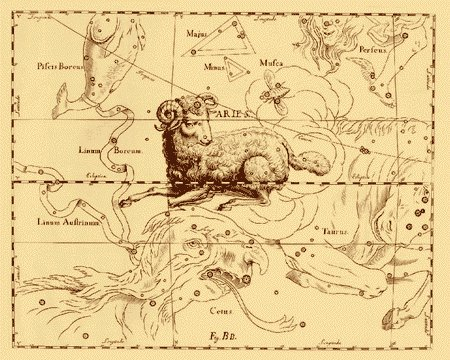
le Bélier dans l'atlas de HeveliusGobineau nous signale que le Bélier est le signe qui se rapporte au bourgeonnement et qu'il constitue, avec le Taureau et les Gémeaux, les trois signes cardinaux par lesquels l'Artiste doit commencer son travail. Nous avons plusieurs fois mis en garde l'étudiant contre ce fait, que les alchimistes veulent signifier par là, non pas tant une époque de l'année tropique que plutôt une époque de l'année hermétique.
« [...] ils [les trois signes sus notés] apprennent que c'est dans ce temps là que le sage Alchimique doit aller au devant de la matière, et la prendre à l'instant qu'elle descend du Ciel et du fluide aérien, où elle ne fait que baiser les lèvres des mixtes, et passer par dessus le ventre des Bourgeons et des feuilles Végétables qui lui sont sujettes, pour entrer triomphante sous ses trois principes universels dans les corps, par leurs portes dorées, et y devenir la semence de la rose céleste » [Explications...]
Le signe du Bélier et du Taureau sont conjoints. Le Bélier, notamment, voile un double symbole, celui d'Arès et celui d'Ariès. Par le premier, il faut entendre un sel vitriolique qui peut être bleu, vert ou blanc. On peut y voir aussi un guhr [cf. Vitriol de Tripied], c'est-à-dire une matière qui « est pierre et non pierre », pour reprendre une expression consacrée par Basile Valentin [cf. Douze clefs de Philosophie]. La décapitation de cette matière, c'est-à-dire sa dissolution, donne naissance à l'acide vitriolique et à du colcothar dans un cas, à du vert-de-gris dans le second et à de la tutie dans le troisième [cf. chimie et alchimie]. Certains sels peuvent même donner, outre de l'acide vitriolique, les deux matières de l'oeuvre qui sont connues comme le SEL et l'un des composés du MERCURE : elles résultent alors de la décapitation de Méduse par Persée et sont appelées respectivement Chrysaor et Pégase [cf. Fontenay]. Le symbole d'Ariès contracte d'ailleurs un rapport avec Chrysaor : il s'agit du christophore [porteur de l'or alchimique] dont l'histoire est l'objet des aventures de Jason et des Argonautes, à la recherche de la Toyson d'or. Pernety a détaillé tout cela dans ses Fables Egyptiennes et Grecques et a donné, dans son Dictionnaire, de nombreux articles qui se rapportent aux principaux héros dette épopée. Il faudraie encore détailler le parallèle à observer entre le mouton Chrysomelle [mhlon] et les pommes d'or du Jardin des Hespérides [cf. Matière] qui sont semblables. Ces pommes d'or voilent un point de cabale fondamental qui a fait l'objet de deux des plus grands cycles mythologiques : la parabole d'Atalante et d'Hipoménès qui a servi à Michel Maier de véhicule à son grand ouvrage, l'Atalanta fugiens ; l'épisode des pommes d'or qui a servi de prétexte à la guerre de Troie. Voici l'article de Pernety
Pomme d'Or. Les fables font mention de plusieurs pommes d'or : la Discorde en jeta une sur la table pendant le repas des noces de Pelée et de Thétis; elle y avait mis une inscription : pour la plus belle. Les Déesses qui se trouvaient à ces noces prétendirent chacune en particulier que cette pomme leur appartenait. Les Dieux, Jupiter même, ne voulurent pas se porter pour Juges de ce différend, et renvoyèrent Junon, Pallas et Vénus, qui se la disputaient, à Paris pour en décider. Il l'adjugea à Vénus, ce qui fut première cause de la guerre de Troye. Voyez liv. 6 des Fables Egypt. et Grecq. dévoilées, ch. 2 et suiv.Ces trois fables et paraboles ont été examinées dans les pages de ce site et nous laissons au lecteur le soin de s'y reporter. Pour en revenir au Bélier, il faut savoir qu'il doit être conjoint au Taureau. Les deux signes sont complémentaires dans la mesure où l'un, le Bélier, voile un acide et que l'autre, le Taureau est l'hiéroglyphe d'une base. De ces deux, naît un produit qui est le premier état du Mercure, par la voie sèche [cf. tartre vitriolé, salpêtre, carbonates, laboratoire, 2].
- Hippoménès par le conseil de Vénus prit trois pommes d'or et les jeta à Athalante pour l'arrêter dans sa course, et il y réussit. V. ATHALANTE . Ces pommes avaient été cueillies dans le jardin des Hespérides, où elles croissaient en abondance. Hercule les enleva toutes pour obéir à Eurysthée. Les feuilles mêmes de l'arbre qui les produisait étaient d'or. Ces pommes sont les mêmes que celles dont parle le Cosmopolite dans sa Parabole aux Enfants de la Science, c'est-à-dire l'or philosophique.
- Cueillir les pommes du jardin des Hespérides, c'est, dans le style Hermétique, faire le soufre des Philosophes. Les jeter à Athalante, c'est fixer le volatil; et l'adjuger à Vénus, c'est finir le premier ?uvre par la fixation de la partie volatile, pour travailler ensuite à la composition de la pierre et de l'élixir représentés par le siège et la prise de la ville de Troye.« [...] l'on voit un Dragon volant qui semble regarder seulement et fixement, Aries, Taurus et Gemini, c'est-à-dire les trois figures du Printemps, qui sont le Bélier, le Taureau et les Jumeaux.Ce Dragon volant qui représente l'esprit universel et qui regarde fixement les trois figures, semble nous dire affirmativement que ces trois mois, sont les seuls dans le cours desquels l'on peut recueillir fructueusement cette matière céleste, que l'on appelle lumière de vie, laquelle se tire des rayons du Soleil et de la Lune, par la coopération de la nature, un moyen admirable, et un art industrieux, mais simple et naturel. » [Explications...]
Ce dragon est sans doute le dragon babylonien, celui dont les textes disent qu'on le rencontre au pied des montagnes, où il tient sa résidence ou au fond de vallées étroites qui sont entre les montagnes. Plusieurs planches du Donum Dei montrent ce dragon « de nature ». La lumière de vie n'est autre que l'esprit astral que les anciens philosophes ont appelé rosée de mai ou manne céleste. Voici encore ce que dit Pernety du Bélier, en son Dictionnaire :
Bélier. Soufre des Philosophes parfait au rouge. Il a pris ce nom de sa qualité chaude et sèche, comme celle du bélier. Les Adeptes disent qu?ils tirent leur acier du ventre du bélier, et ils appellent aussi cet acier leur aimant. Voyez ARIÈS. Mais quand le Cosmopolite et Philalethe s?expriment ainsi, ils entendent parler de la matière même de l??uvre, de laquelle ils font leur soufre.Pernety ne s'est pas expliqué d'une manière cohérente : il a confondu les deux Soufres [la teinture et le corps sur lequel elle doit être projetée en masse]. L'aimant est le symbole du Mercure [cf. Matière]. L'acier désigne le Sel incombustible, autrement désigné par la salamandre et qui est l'Ariès hermétique. Pernety a été avare de détails sur cet article :Aries ou Bélier. Ces termes sont mystérieux dans les écrits des Philosophes Chymiques; ils disent que leur matière se tire du ventre d?Ariès. Quelques-uns prenant ces termes à la lettre ont cru que cette matière était de la fiente de Bélier; mais les Philosophes parlent du Bélier, signe du Zodiaque, et non du Bélier animal.C'est là où l'on aperçoit les limites de l'interprétation de Pernety, qui a été esclave de la théorie alchimique des transmutations métalliques, le courant chimérique que les Adeptes ont fait miroiter aux mercantis, tout en parlant, mezzo voce, du courant positif, celui de la transformation et de l'évolution des pierres communes en pierres précieuses [cf. Idée alchimique, II - Mercure de nature - Protée I et II]. In fine, Pernety se rattrape toutefois en faisant entendre qu'Ariès serait la matière de l'oeuvre dont les alchimistes font leur Soufre : voilà une indication utile. Nous allons compléter nos sources en citant, au long de cette section, des extraits d'un ouvrage remarquable : le Traité d'astrologie générale de Robert Fludd [annot. et trad. du latin pour la première fois par Pierre Piobb, Paris, H. Daragon, 1907, XXII-293 p]. Qu'il soit bien compris une fois pour toutes que nous ne reprenons en aucun cas à notre compte les assertions de Fludd sur l'astrologie à proprement parler mais que nous examinons ses réflexions dans une optique résolument hermétique, tournée vers l'explicitation des périodes du Grand Oeuvre alchimique.« Le Bélier est oriental dans sa triplicité et cardinal, parce qu'il se trouvait à l'angle d'Orient, point cardinal, lorsque le Soleil se leva pour la première fois sur le monde après sa création. Il y a quatre signes cardinaux : le Bélier, le Cancer, la Balance, le Capricorne. » [signe du Bélier, Fludd]
Sur le Bélier, voyez l'Atalanta, L. On dit que l'oeuvre prend son début à l'orient et qu'elle se termine à l'occident. Le Bélier est le premier des signes de FEU ; il vient en premier dans l'ordre des opérations. Selon ce qu'on en a dit dans la prima materia et dans l'Atalanta, XLV, lorsque la base et l'acide ont été mélangés et qu'ils se sont neutralisés, les travaux continuent dans le signe de TERRE du Capricorne, puis dans une triplicité spéciale, faite du Lion, du Cancer et des Gémeaux. Le Cancer est un signe d'AIR. Les travaux se poursuivent dans la Balance, qui est un signe d'EAU [selon notre système réformé, cf. prima materia et l'humide radical métallique pour des explications et des justifications sur l'interversion des Eléments].

l'ordre des opération alchimique les éléments réformés - l'ordre des opérations
Ce signe est dominé par la figure d'Aphrodite - Vénus. Nous avons été amenés à examiner la complexité symbolique de ce signe, rejoint en cela par le Bélier. Ce sont les décans, là encore, qui permettent de « cheviller » les différentes constellations et de les coordonner : une constellation prise en tant que telle n'a, en effet, maintenant que nous voilà arrivés au terme de notre étude, qu'une portée très relative et c'est sa situation par rapport à d'autres qui détermine sa sphère d'influence [le sens de cette phrase, rappelons-le, est restreint au cadre alchimique]. Pernety a consacré un grand article au second signe du zodiaque :
Taureau. Animal quadrupède d'un grand usage pour l'agriculture. Les Philosophes l'ont donné très souvent pour hiéroglyphe de la matière du Grand ?uvre. Les Egyptiens avaient en conséquence beaucoup de vénération pour cet animal, que les Prêtres présentaient au peuple comme le symbole d'Osiris, un de leurs grands Dieux. Les Philosophes Grecs, instruits par ces Prêtres de ce qu'ils entendaient par le taureau, inventèrent beaucoup de fables, dans lesquelles ils introduisirent cet animal, et indiquèrent la qualité chaude et solaire de la matière, en disant que ces taureaux jetaient du feu et de la flamme par la bouche et les narines. Tels sont ceux que Jason surmonta et mit sous le joug pour leur faire labourer le champ de Mars, afin de s'emparer par ce moyen de la Toison d'or suspendue dans la forêt de ce Dieu. Tel était celui dont Hercule débarrassa l'île de Crète. Les pieds des uns et des autres étaient d'airain. Europe fut enlevée par un taureau, Pasiphaé devint amoureuse d'un taureau; Cadmus suivit un b?uf, et bâtit une ville dans l'endroit où il s'arrêta. Le fleuve Achélous se changea en taureau pour combattre Hercule; Prothée prenait la forme de taureau, etc.Comme d'habitude, Pernety ne doute assurément de rien. Il n'est pas probable que le taureau désigne expressément le soleil ou l'or des alchimistes. Sur le taureau, voyez l'Atalanta, XXXVIII. Si le premier décan en montre l'idéogramme habituel, le 2ème décan lui, montre l'image de Méduse, et le 3ème, celle des sept filles d'Atlas qui forment la constellation des Pléiades. Tout cela a été détaillé dans la section sur le Taureau. On ne voit pour ainsi dire, que des symboles mercuriels dans le Taureau, à l'exception notable de l'une des Pléiades, Mérope. En effet, Maia est la mère de Mercure, Electre est une indication sur l'airain, Taygète est mise pour Diane, Astéropé se rapporte à l'étoile, qui désigne l'état de la matière, quand elle prend, selon sa disposition, la forme d'une fleur [anqoV] ou d'une étoile ; Alcyonè annonce la conjonction des éléments après une forte tempête. Célaéno enfante Lycos, mis à mort par amphion et Zéthos qui jouent dans cette fable le même rôle que Diane et Apollon. Seule Mérope indique, par le biais de l'île de Cos, pour des raisons développées ailleurs [Atalanta, XXXVIetXXXVIII], une terre rouge où le Soufre blanc se mêle intimement au Soufre rouge. C'est dans cette terre rouge [Lambsprinck dit « dans cette argile »] que le Soleil peut être trouvé.
Les Prêtres d'Egypte nourrissaient avec beaucoup de soins un taureau noir ayant seulement une tache blanche, et le logeaient dans le temple de Vulcain. le plus grand de leurs Dieux. Osiris, dont ce taureau était le symbole, signifiait feu caché, et avait pour s?ur et pour épouse Isis, ou une vache, qui avait Mercure pour Conseiller et Administrateur de tout l'Empire pendant les voyages d'Osiris son mari, et après sa mort. Osiris était lui-même le symbole du Soleil et Isis l'était de la Lune; mais du Soleil et de la Lune des Philosophes, et non des astres qui nous éclairent, ou des astres terrestres, l'or et l'argent, que les Chymistes vulgaires appellent Soleil et Lune.
Les Egyptiens parfaitement instruits des secrets les plus cachés de la Nature, imaginèrent en conséquence les signes du Zodiaque, toujours par allusion à leur Art Hermétique, que les Philosophes assurent être la clef de toutes les sciences. Ils assignèrent pour cet effet les trois signes du Bélier, du Taureau et de Gemini pour ceux qui président au commencement de l'année ou du printemps, parce qu'ils sont le commencement de l'oeuvre. Les Philosophes, en suivant le système des anciens Disciples d'Hermès, ont dit pour cette raison, qu'il fallait commencer l'?uvre au printemps, quoiqu'on puisse le commencer en effet dans toutes les saisons. Ceux qui sont au fait de l'Astrologie en devineront aisément les raisons, pourvu qu'ils aient aussi lu attentivement les livres des Philosophes. Voyez ZODIAQUE.
Il paraît que l'Auteur du Dictionnaire Hermétique n'avait pas médité longtemps et sérieusement les ouvrages des Philosophes, et combiné leurs raisonnements sur les fables, lorsqu'il interprète les taureaux qui gardaient la Toison d'or, par le feu vulgaire entretenu dans des fourneaux chymiques, dont les registres représentent les narines de ces animaux. Le taureau furieux qui ravageait l'île de Crète, et qui avait des pieds d'airain comme ceux que Jason mit sous le joug, font voir clairement que ces allégories ou fables ne peuvent s'entendre des fourneaux chymiques, mais du fourneau secret des Philosophes. Hercule après avoir pris le taureau de l'île de Crète, le conduisit à Eurysthée, c'est-à-dire, à la plus grande fixité, comme on peut le voir dans le livre 5, ch. 1, 7 et 10 des Fables Egypt. et Grecq. dévoilées. Tant que l'eau mercurielle des Philosophes demeure sur la terre des Sages, signifiée par Pisie de Crète, cette terre est ravagée par la dissolution, et incapable de rien produire; mais sitôt qu'Hercule arrête le taureau, ou fixe cette eau, pour le mener à Eurysthée, elle devient propre à la végétation; on peut la cultiver pour y semer l'or philosophique.
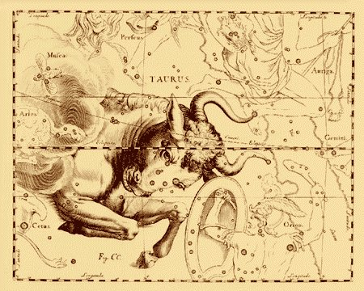
le Taureau, atlas de HeveliusOn l'a vu, certains signes sont triples alors qu'on y observe d'abord qu'une seule figure, d'autres sont doubles. C'est le cas pour le signe des Gémeaux qu'on prend pour le 6ème dans l'ordre des travaux. On le considère, en effet, comme l'achèvement de l'oeuvre sur le Rebis. Son hiéroglyphe peut être trouvé dans la section de l'humide radical métallique. il s'agit de l'une des figures du Livre d'Abraham Juif qui montre le caducée de Mercure, les deux serpents que sont, à cette époque, les deux colombes de Diane et le casque qui marque la nature fluente de la matière. Les Gémeaux ont été analysés dans l'Atalanta, XXXVIII en même temps que le Taureau. Nous avons insisté sur le mythe de Castor et Pollux [cf. Atalanta, XXV avec la magnifique cheminée hermétique dont nous devons la connaissance à M. Alain Mauranne], sur la chèvre Amalthée qui représente l'hiéroglyphe de la substance mercurielle qui permettra l'évolution du compost jusque vers le signe de la Balance [il s'agit d'un signe sur la conjonction]. Enfin, Orion et Sirius complètent les Gémeaux. Orion est une constellation dont la complexité hermétique semble tenir de même, de sa complexité astronomique. Aussi Orion fait-il encore l'objet d'une analyse dans l'Atalanta, XLIX avant dernier chapitre du célèbre recueil de Michel Maier. Protecteurs de la Ville éternelle, les deux frères jumeaux Castor et Pollux, occupent une place de choix au Panthéon Céleste. Ceux que Rome avait baptisés les deux Dioscures, les fils de Zeus, brillent dans la constellation qui leur est consacrée, située à l'est au-dessus d'Orion. Elle a la forme d'un rectangle presque parfait, dont chacun des côtés longs représente l'un des jumeaux. Même taille, même allure, et tous deux souvent représentés se tenant étroitement enlacés par la taille ou par les épaules. Castor et Pollux étaient le type même des jeunes héros sans peur et sans reproche dont raffolaient les Anciens. Beaux, intelligents et solides, tous deux fils de Léda, ils étaient nés de pères différents. Léda, épouse de Tyndare [1, 2, 3, 4, 5, 6,], roi de Sparte. Elle lui donna deux enfants : Castor et Clytemnestre [1, 2, 3, 4, 5, 6, 7, 8, 9,]. Elle aurait très bien pu en rester là si Zeus, le très concupiscent maître de l'Olympe, ne lui avait tendu un piège volupteux, prenant la forme d'un cygne magnifique pour la séduire. Cédant au désir du dieu, Léda donna naissance à deux autres enfants, immortels ceux-là : Pollux et Hélène [1, 2, 3, 4, 5, 6, 7, 8, 9,]. Les inséparables Castor et Pollux furent de toutes les aventures, de toutes les expéditions. C'est ainsi qu'en compagnie d'Hercule, d'Orphée et d'autres héros antiques, ils accompagnèrent Jason dans sa quête de la Toison d'or. Les deux frères étaient chargés d'assurer la protection du navire Argo, en calmant les colères de Poséidon, le dieu de la mer, et en apaisant les flots tumultueux [notez le rôle analogue aux Dioscures qui est celui des pilotes du navire Argo - d'abord, Tiphys puis Ancé - conduire le navire à bon port. cf. Atalanta, XLVII] et ensuite . Lorsqu'ils montèrent à bord, la légende raconte que deux feux se mirent à danser au bout du mat...Depuis, les deux frères furent considérés comme protecteurs des marins [Atalanta, XXV]. Un jour, la légende ne raconte pas pourquoi, tous deux se rendirent dans le pays où vivaient deux éleveurs de troupeaux, Idas et Lyncée. Pour d'obscures raisons, une querelle éclata entre les quatre hommes. Toujours est-il que Castor, le malheureux mortel, succomba sous le poignard d'Idas. Pollux fut inconsolable, même après avoir vengé son frère. Il supplia Zeus de le laisser mourir à son tour ou de redonner vie à Castor. Le dieu, magnanime, autorisa son fils à partager son immortalité. Depuis lors, les deux frères passent alternativement un jour dans le royaume d'Aidès, la résidence finale des mortels, et un autre dans l'Olympe, auprès des Immortels.
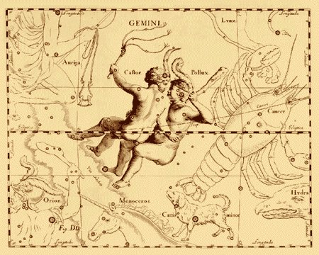
les Gémeaux - atlas de HeveliusL'épisode d'Idas et Lyncée est détaillé dans l'Atalanta, XXV. Sur Lyncée, on trouve cet article dans Pernety :
Lyncée. Fils d?Egyptus, ayant épousé Hypermnestre, fille de Danaus, celui-ci ordonna à toutes ses filles, au nombre de cinquante, de tuer leurs époux la Première nuit de leurs noces. Toutes obéirent, excepté la seule Hypermnestre. Lyncée, son époux, se sauva, et vengea dans la suite la mort de ses freres par celle de Danaüs. Voyez HYPERMNESTRE.Il semble que ce Lyncée là soit différent de celui qui était le fiancé de Hilaera. A noter que Nicolas Flamel, dans ses Figure Hiéroglyphiques, utilise le terme « lyncée » au lieu de lynx, expression tombée ensuite en désuétude. Lyncée faisait partie des héros qui sont partis avec Jason à la conquête de la Toyson d'or.Cinquième signe dans l'ordre des opérations, c'est peut-être celui où la dissolution apparaît si l'on peut dire, dans toute sa splendeur. C'est l'époque de la grande éclipse de Soleil et de Lune de Lulle. C'est l'époque, tout autant, des plus grands périls qui peuvent survenir à l'oeuvre. Pernety nous dit pourtant :
Cancre ou Cancer. La pierre des Philosophes fixée au rouge, ainsi nommée à cause de sa complexion chaude et seche, et de sa vertu ignée, qui l?a fait nommer Pierre de feu, Miniere de feu céleste. [Dictionnaire]passant ainsi complètement à côté du symbolisme, pourtant assez évident, de l'Ecrevisse. Pourtant, le moine bénédictin n'a pas tout à fait tord, puisqu'il nous signale la « Pierre de feu ». Mais il aurait dû ajouter la « Pierre au feu », c'est-à-dire la TERRE faite EAU par le moyen du FEU secret. Et cette matière étrange, cette terre de feu, forme en fait le ciel firmamental de l'athanor des Sages. Aussi est-ce en toute logique que le Cancer doit être considéré comme un signe d'AIR. L'origine du nom de la constellation du Cancer n'est pas très bien connue. Pour les Grecs, une écrevisse géante fut dépéchée par Héra pour pincer les orteils du colosse Hercule pendant qu'il combattait l'Hydre de Lerne. Elle le pinca au talon mais le héros l'écrasa. Héra la récompensa de ses efforts en lui offrant une place parmi les étoiles. Son signe zodiacal représente ses pinces. Les Chaldéens l'auraient appelée Ecrevisse parce qu'à cette époque le Soleil se trouvait dans cette constellation au moment du solstice d'été, d'où le nom de tropique du Cancer qui correspond à la plus haute latitude nord du Soleil [23° de déclinaison]. Le Cancer se trouve environné de constellations intéressantes : le Lynx, l'Hydre, le Sextant et le Petit Chien. La Licorne en est assez proche. Sur le lynx, les Latins pensaient qu'il voyait en dormant [lupa cervalis]. Le pilote de l'Argo, le bateau qui conduisit Jason dans sa quête de la Toison d'or, s'appelait ainsi Lyncée [on a vu que Pernety l'appelle « Ancée » ; il s'agit du deuxième pilote] parce qu'il pouvait voir à travers le brouillard et on utilisa longtemps l'expression « avoir des yeux de Lyncée » [cf. supra à propos de Nicolas Flamel].
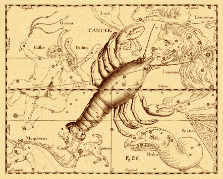
le Cancer - atlas de HeveliusLe Cancer a été étudié dans l'Atalanta, XLIII.
Signe complexe, le Lion inaugure la dissolution. Il vient en 4ème ligne dans l'ordre des opérations. C'est dans sa forme de Lion vert qu'il faut en parler, c'est-à-dire du Mixte formé du Mercure, en son premier état, et de l'Airain des Sages. C'est d'un Mercure indompté qu'il s'agit d'abord ; il est représenté par le Lion de Némée qu'Hercule affronte. Il est encore représenté par le Grand Chien ou enfin par l'Hydre, considérée sous l'espèce de serpent d'eau, en quoi elle se montre, dans l'oeuvre, l'enfant d'Echidna et de Typhon. L'une de ses sept têtes est immortelle ; il s'agit de l'OR philosophique, non celui du vulgaire comme se plaisent à le dire les rusés alchimistes. Au vrai, cet or dont ils parlent tient le milieu entre l'OR et l'ARGENT. Qu'on veuille bien considérer la ductilité de l'or, la malléabilité de l'argent ; le fait qu'il se trouve pris dans sa minière avec du soufre et de l'antimoine. On trouvera alors sans peine le SEL des Sages. Le Lion a été analysé dans l'Atalanta, XLIV. Les Anciens avaient projeté leur imaginaire en y voyant tant de créatures dans les chimères qui parsèment le ciel. Telle se révèle la constellation du Lion. Située entre le Cancer, la Grande Ourse et la Chevelure de Bérénice, elle se signale par le félin de noble port, à l'allure caractéristique de sphinx, assis au-dessus de l'horizon, face à l'ouest. L'emplacement de sa tête, de son poitrail et de ses pattes avant est indiqué par un groupe d'étoiles, agencé d'une manière telle qu'il évoque un point d'interrogation inversé. A ce sujet, voici une fable rapportée par le poète Ovide. A l'époque où les mûriers ne donnaient que des fruits blancs comme neige, vivaient dans Babylone deux jeunes gens, Thisbé et Pyrame, qui s'aimaient d'amour tendre. Leur passion était contrariée, les parents respectifs ne voulant entendre parler d'union. Bien que séparés, ils cherchaient par tous les moyens à se voir. Un jour ils se donnèrent rendez-vous dans un endroit charmant, sous un grand mûrier blanc à côté d'un ruisseau aux claires eaux murmurantes. Thisbé arriva la première. Elle rêvait au clair de Lune dans ce cadre si propice quand, soudain, une lionne sortit des bosquets. Elle venait de festoyer, sa gueule en était encore toute ensanglantée, et mourrait de soif. Thisbé, épouvantée, s'enfuit en courant, oubliant son voile sur l'herbe. La lionne s'amusa avec, le déchiqueta à belles dents et le poissa du sang de sa dernière victime. Elle étancha ensuite sa soif et partit comme elle était venue, sur la pointe des griffes. Lorsque Pyrame arriva à son tour, il ne retrouva pas la belle Thisbé mais seulement son voile, déchiré et maculé de sang. Il crut évidemment que Thisbé avait été dévorée par la lionne... Éperdu de douleur, Pyrame sortit son épée et se la plongea dans le corps. Il agonisait lorsque, Thisbé, dominant sa peur, revint sur les lieux de leur funeste rendez-vous. Devant le corps de son ami, gisant à côté du voile fatal, elle comprit que Pyrame s'était donné la mort par amour pour elle. Elle se saisit à son tour de l'épée et se tua. Depuis, les fruits du mûrier ne sont plus blancs comme neige, mais pourpre, teints à jamais par le sang innocent des amants de Babylone. On ne saurait dire à quel point cette fable s'accorde à l'hermétisme alchimique. Ces deux amants sont nos deux natures métalliques [Soufre rouge et Soufre blanc ou Sel]. La lionne représente le Mercure et le grand mûrier blanc, le but de la tâche que l'Artiste doit accomplir à cette époque du travail. Cette histoire tend à rappeler l'emblème XLI de l'Atalanta fugiens, où Adonis est culbuté par un sanglier [sans doute Arès métamorphosé] : de sa blessure mortelle à l'aine, sort un sang blanc, coloré en rouge par Aphrodite, qui s'était blessée à des églantiers, en voulant porter secours à Adonis. Le nom même de Pyrame rappelle le pyroxène, pierre qui vit dans le feu [étrangère au feu]. D'où l'allusion finale aux mûriers qui, depuis lors, sont teintés de pourpre qui représente la dernière couleur de l'oeuvre. Quant aux amants de Babylone, ils rappellent assez le nom du dragon portant le même nom, pour qu'on y voit la marque du vitriol romain [cf. Atalanta, XX].
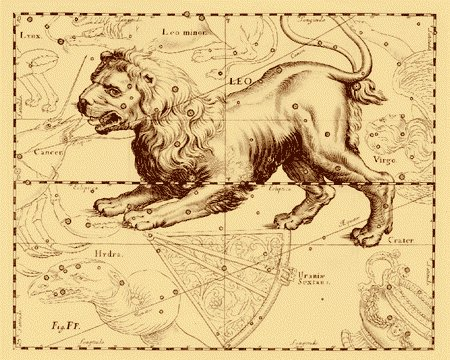
le Lion - atlas de Hevelius
Ce signe est celui de la fermentation du Rebis, ou si l'on préfère, de son accroissement. Ptolémée, dans sa Tetrabiblon, nous laisse perplexe quant aux qualités qu'il attribue à la Vierge :
Le signe de la Vierge dans son ensemble est humide et excite le tonnerre. Quand on considère ses parties une à une, la première est plutôt chaude et destructrice, la partie du milieu est tempérée, la dernière partie est pluvieuse. Sa partie nord suscite les vents et celle du sud est tempérée. [Le Livre Unique de l'Astrologie, trad. par Pascal Charvet, Nil éditions]On se rappellera qu'Atalante était vierge avant qu'elle fut battue à la course par Hippoménès. Notez qu'il ne faut pas confondre la Vierge et le principe féminin de l'oeuvre [le Soufre blanc, voilé par les mots suivants : Reine, femme blanche, neige, colombe, sel fleury, Beja, chien méridional, le crachat de la lune, etc., in L'Oeuvre du Lion Verd, de Jacques Le Tesson ]. En ce sens, la Vierge n'est autre que le vase de nature, tant de fois décrit dans ces pages, où le Rebis s'accroît lentement. Nous avons aussi plusieurs fois évoqué, parce que d'autres en avaient parlé avant [Fulcanelli, E. Canseliet] le sujet de l'Annonciation. A l'époque, nous ne savions pas si cette parabole se rapportait au 2ème ou au 3ème oeuvre. Il est hors de doute, au terme de nos études alchimiques, que l'allégorie veut mettre en place le concept de « parousie alchimique », qui annonce le retour des cendres. Or, ce retour des cendres est celui de la « vitreuse provision » qu'évoque perfidement E. Canseliet quand il feint de nous faire croire qu'il s'agit d'un composé qui doit être tenu dans un vase hermétiquement fermé. Ce qui, dans un sens, est parfaitement exact et surtout, qui ne donne aucune indication de la forme prise par ce vase...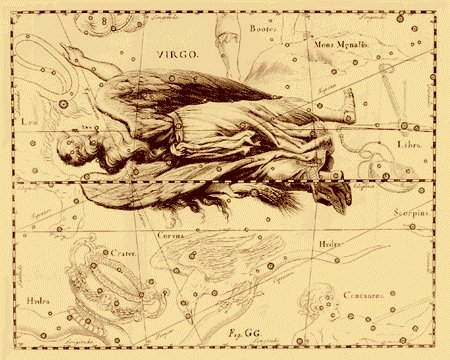
la Vierge - atlas de Hevelius
Inséparable de la Vierge qu'elle précède dans les opérations du grand oeuvre, la Balance est le signe qui préside à la pesée naturelle des principes dans l'élaboration du Rebis. La mythologie s'exprime ici par Themis, dont la contre partie à proprement parler chimique semble être du ressort de phénomènes complexes d'oxydo réduction où la chaux joue sans doute un rôle important. Aussi ce signe voile-t-il un processus qui est certainement la clef de l'oeuvre. Ce n'est donc point un hasard si la Balance se trouve attaché au noeud inférieur du trajet du Soleil, par opposition au point vernal [point g]. De là surgit un monde des demi-tons, où les alchimistes ont cru voir des rapports entre la musique et le magistère. Il s'agit là du signe de la Vénus - Aphrodite envisagée non pas sous sa forme de Lucifer, telle qu'elle l'est au début de l'oeuvre [Taureau], mais bien plutôt sous sa forme de Vesper, d'Hesperus, de stibine. C'est le premier signe de la mutualité. A ce stade se manifeste un équilibre dynamique de la dualité et des polarités opposées. La recherche de l'équilibre doit se faire entre les deux plateaux: les désirs matériels et charnels (scorpion) et le monde de l'esprit qui doit tendre à la purification et la transformation (Vierge).La Balance apparaît dans l'Iliade, comme un symbole du destin, comme on peut le montrer par le combat d'Achille et d'Hector [cf. Atalanta, XXXV]. La Balance explique aussi en quoi Vénus est liée à Saturne, chose qui n'a jamais été expliquée ouvertement par les alchimistes. On peut rapprocher là deux mythes qui, selon toute apparence, n'ont pourtant rien à voir entre eux :
- celui du jugement de Pâris, qui ayant été établi par les Dieux arbitre du différend survenu entre Junon, Minerve et Vénus, à l'occasion de la pomme d'or jetée par la Discorde sur la table du festin des noces de Pelée et de Thétis, adjugea cette pomme à Vénus, et encourut par-là la disgrâce des deux autres Déesses. Vénus, pour récompense, lui procura la belle Hélène, femme de Ménelas, que Paris enleva. Ce rapt fut la cause de la guerre que les Grecs firent à Priam, et du siège célèbre que la ville de Troye soutint pendant près de dix ans avant que de se rendre.
- celui de Vénus et Proserpine, toutes deux amoureuses du bel Adonis, se trouvèrent confrontées à l'indécision du jeune homme. Vénus, ne pouvant supporter ce manque de décision, se tourna vers Jupiter et celui-ci comprenant les tourments que posaient l'Amour, énonca son jugement. Ainsi Adonis passerait l'hiver auprès de Proserpine dans le royaume des ténèbres, puis passerait l'été avec Vénus dans les forêts de sa terre natale.On relève des points de jonction entre les deux fables. D'abord, elles font intervenir Vénus ; la pomme d'or et Adonis se révèlent avoir un sens commun, le Soufre. Enfin, le litige, dans les deux cas, qui figure le fléau de la balance.
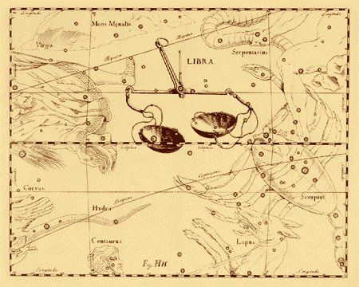
la Balance - atlas de HeveliusL'interprétation alchimique du signe a été donnée dans la section Atalanta, XLVI. Ajoutons que d'après le Livre des morts Egyptiens, on imaginait la pesée des âmes, c'est-à-dire, pour notre sujet, des Soufres. D'un côté, on mettait le vase [signifiant le coeur du mort] et de l'autre côté, une plume d'autruche. Rappelons que L'autruche [strouqoV] désigne le coq ou le coing [le symbolisme est le même], le symbolisme étant axé sur l'irruption de la lumière.
On a affirmé bien des choses fausses sur ce signe et l'ésotérisme s'est vu remplacé par une sorte de théosophie bornée :
Après avoir pris conscience du non-moi (Balance), l'Esprit doit véritablement subir une transformation radicale et passer l'épreuve de la mort intérieure pour renaître. Le Scorpion est une incarnation de crise. Toutes les formes auxquelles s'était habitué l'Entité se dissolvent, l'ego est sacrifié. C'est l'entrée dans les mondes infernaux, ceux de notre subconscient et les premiers contacts avec l'Invisible (Hadès, royaume de l'Âme).Or, si les mots justes sont employés, c'est absolument hors contexte. Certes, la Balance est une phase de « non-moi » si l'on veut bien considérer que les Soufres s'y trouvent sous une forme dissoute ; d'ailleurs, cette phase va durer encore assez longtemps, puisque c'est précisément dans le Scorpion, mais après être passé par le Verseau et le Sagittaire que la nature y accomplira son office. Aussi, bien loin qu'il y ait transformation dans le sens « d'une mort intérieure », peut-on voir avec plus de justesse la phase d'accrétion des Soufres, autrement appelée l'incarnation de l'Âme ou envenimation du Monde. Nous comprendrons volontiers que le lecteur reste dubitatif après avoir consulté ces lignes. Il n'y a, pourtant, aucun autre moyen logique ou rationnel, de considérer ce qui se passe, par l'allégorie, dans la matière du vase de nature, en cette époque du travail. Aussi est-ce encore une erreur de considérer que le Scorpion évolué devienne un serpent ou un aigle. Bien au contraire, peut-on voir dans le Scorpion, la fin du serpent [c'est-à-dire du Mercure]. C'est donc bien plutôt d'un phénix qu'il faut parler en évoquant le Scorpion. En n'oubliant pas, d'ailleurs, qu'un rubis brille en son centre,Antarès, ainsi nommée à cause de son éclat rougeoyant qui en fait une rivale d'Arès. Nous avons analysé par deux fois le Scorpion dans ces pages, d'abord dans la réincrudation, puis dans l'Atalanta, XLIX où l'étude a été complétée.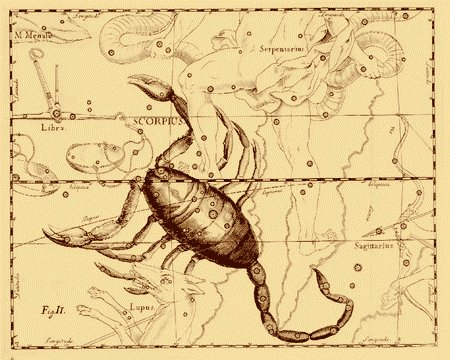
le Scorpion - atlas de Hevelius
Signe plus simple que les précédents, le Sagittaire est indissociable du Scorpion : par sa flèche levée vers les cieux, le Centaure s'apprête à opérer la réincrudation du Soufre dont la flèche, d'ailleurs, constitue, dans la Monade Hiéroglyphique de John Dee, l'hiéroglyphe consacré. Il forme le terme de la trinité de FEU, seuil au-delà duquel la température de la matière doit nécessairement s'infléchir d'une manière très lente, ce qui est symbolisé par la deuxième roue du feu de roue, cher à Fulcanelli. Ce signe a été étudié dans l'Atalanta, XLIX. Nous ajouterons qu'Artémis domine le Sagittaire, ce qui est parfaitement conforme à la doctrine hermétique, puisque, lorsque Latone arriva, épuisée, à Délos pour accoucher d'Apollon, elle mit au monde d'abord Artémis, qui lui servit de sage-femme.
le Sagittaire - atlas de HeveliusIl n'est pas indifférent de préciser que c'est la pierre keraunius [keraunioV] qui était consacrée, jadis, au Centaure de la race de Chiron. La céraunie porte, en effet, une chèvre chevelue dans laquelle on devine Amalthée, nourrice de Zeus. Mais d'autres pierres, dans les Lapidaires Grecs, ont été pareillement consacrés à Jupiter : l'erbosa, l'aerinoV [airain], le bhrulloV, l'iaspiV et enfin la sarde. Le jaspe semble assez bien correspondre au symbolisme du signe, selon le degré de translucidité qu'on y devine [on passe dans le Sagittaire, du Lion vert au Lion rouge]. Aussi serons-nous tentés d'y reconnaître notre jaspe vert opaque ou la chrysoprase translucide. La céraunie, c'est-à-dire la pierre de foudre tombe aussi d'accord avec le symbolisme général du Sagittaire, tel que nous l'avons dégagé de l'examen de l'emblème XLIX de l'Atalanta fugiens. Deux des variétés de Pline, la cristalline et la rouge, pourraient correspondre au saphir [Pline, XXXVII, 134-135 et Isid., XVI, 13, 5].
Le Capricorne est déjà présent sur des monuments babyloniens. Les cartes illustrées montrent un étrange animal, mi-chèvre, mi-poisson. La légende raconte que le dieu Pan festoyait avec d'autres dieux lorsque le monstre Typhon apparut soudainement. Pour lui échapper, les dieux se transformèrent en bêtes. Mais dans sa panique, Pan sauta dans le Nil avant d'achever complètement la transformation de son corps en chèvre. Si bien que la partie inférieure de son corps se changea en queue de poisson. Cette transformation plut tant à Zeus qu'il plaça la chèvre marine dans le ciel. Typhon renvoie au Mercure, directement, par les métamorphoses qu'il induit [Diane se transforme en chate aux yeux perçants et aux moustaches en forme de mérelle ; Mercure se transforme en Ibis - dieu Thot - ; Bacchus se transforme en bouc ; Junon, en une vache blanche ; Vénus, en poisson]. Notons que les métamorphoses de Bacchus et Vénus se rapprochent, quand on les superpose, du hiéroglyphe du Capricorne, moins la chèvre. Voyez à ce propos ce que nous écrivons sur les rapports entre le bouc, Pan et Osiris [Atalanta, XLIII].
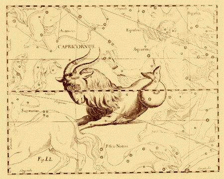
le Capricorne - atlas de HeveliusLe Capricorne est étudié en détail dans l'Atalanta, XLIII. Les Lapidaires Grecs font de la pierre ostrachitis [ostrakithV] l'emblème du Capricorne Les descriptions de l'ostrachite sont contradictoires, mais il semble s'agir d'une pierre abrasive. L'agate est nommée par d'autres, ou encore l'ojithV et la sardoine. L'ojithV est une espèce de marbre veiné de noir, de cendré et de blanc comme des taches sur un serpent. On peut évoquer la serpentine, silicate de magnésium, coloré de façon très diverse, surtout en vert. On l'employait en magie, contre les morsures de serpent, en ligature. Quant à la sardoine, c'est une variété de cornaline [sorte de calcédoine coloré en rouge ou jaune brun par de l'oxyde de fer à des degrés différents d'oxydation]. Par la suite, la sardoine devait désigner, sous son nom latin de saedonyx, toutes les pierres superposant plusieurs niveaux de couleurs différentes. Il fallait au moins trois niveaux différents. Le Capricorne est le troisième signe dans l'ordre des opérations. Il vient immédiatement avant ceux qui sont engagés dans la phase de dissolution, qu'il prépare en quelque sorte.
La constellation zodiacale du Verseau était déjà connue des anciens Babyloniens et Egyptiens qui voyaient en elle un homme portant une cruche, source de l'eau qui donne la vie. Selon la mythologie grecque, c'est Deucalion [1, 2, 3,], fils de Prométhée, naviguant sur les eaux du Déluge. Cette constellation a une place tout à fait appropriée dans le ciel, près du Dauphin, d'un serpent de mer, d'un poisson (le Poisson Austral, Piscis Austrinus) et d'une rivière (la Voie Lactée). On pourrait de prime abord rattacher le Verseau au Capricorne [du moins les Chaldéens ont-ils précisé que Saturne convenait aux deux signes sous le rapport de la maîtrise]. En fait, il n'en est rien puisque le Verseau vient en 9ème ligne dans les opérations, préparant la mise en jeu du Sagittaire. Le Verseau a été étudié au chapitre XL de l'Atalanta fugiens. Du Verseau, le dauphin, Pégase et la conque sont indissociables.
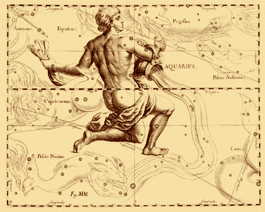
le Verseau - atlas de Hevelius
Nous considérons que l'oeuvre s'achève en ce signe d'AIR. Depuis plusieurs milliers d'années, on voit dans cette faible constellation zodiacale l'image de deux poissons liés par un ruban. Dans la mythologie gréco-romaine, Aphrodite et son fils Eros, pourchassés par le monstre Typhon, se transformèrent en poissons. Ils s'attachèrent par la queue pour s'assurer de ne pas être séparés et prirent la fuite à la nage. Loin de cette image de la mythologie classique, nous voyons dans ce signe les poissons dont parle Jean d'Espagnet, un des plus grands philosophes hermétistes, l'un de ceux qui eut comme élève Philalèthe et Isaac Newton. Il nous laisse deux traités, l'un traitant de philosophie hermétique [Philosophie Naturelle Restituée], l'autre, l'Oeuvre Secret d'Hermès, ayant plus de rapport avec notre sujet. Cette constellation pourrait d'ailleurs n'être qu'artificielle, à y bien penser. Il semble qu'une autre constellation portait le nom de Poisson, mais il n'y en avait qu'un seul, du temps des Perses, où les Pléiades étaient appelées perviz [ce qui signifie poisson].
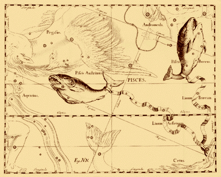
FIGURE XIII
(les Poissons - atlas de Hevelius)
Ce signe a pour Jung une importance toute particulière ; au point qu'il a consacré une partie de son Aïon [trad. Albin Michel, 1983] au sujet. Lambsprinck, dans son De Lapide Philosophorum [voir Musaeum Hermeticum, pp. 337-373, 1678] consacre son premier emblème aux deux poissons. Il y voit, curieusement, le principe du Mercure et du Soufre; pour lui la mer correspond au Corps. Nous avons eu ailleurs l'occasion d'analyser ces apparentes incohérences qui s'inscrivent dans une conception de la trinité chrétienne de l'alchimie qui se démarque quelque peu du symbolisme traditionnel. Pernety, dans son Dictionnaire mytho-hermétique, fait presque l'impasse sur le Poisson en signalant :
« Lorsque la matière est parvenue à un certain degré de cuisson, il se forme sur sa superficie de petites bulles qui ressemblent aux yeux des poissons. Voyez YEUX . »
Cette remarque, toutefois, est d'un grand intérêt comme nous l'avons montré dans le Ripley Scrowle. A l'article YEUX, on lit :
« Les Philosophes comparent aux yeux de poisson certaines espèces de bulles sulfureuses qui s'élèvent au-dessus de la matière de l'?uvre; ce qui les a engagés à dire qu'il fallait tendre des filets, et pêcher le poisson Echéneis qui nage dans la mer philosophique. Quelques Adeptes ont dit que la matière ressemblait alors à du bouillon gras, sur lequel surnagent des étoiles de graisse : ils ont en conséquence nommé la matière en cet état, Brodium saginatum. »
C'est Jean d'Espagnet qui, dans son Oeuvre secret d'Hermès [traité probablement apocryphe dont le style s'éloigne beaucoup de sa Philosophie Naturelle Restituée] a le premier distingué les poissons gras sulfureux des poissons argentés et mercuriels. Rappelons que D'Espagnet est un auteur très apprécié de Newton [voir MS. alchimiques de Newton].
Nous voilà parvenus au terme de notre quête. Rappelons que ce chapitre se veut une apostille à l'ensemble du commentaire de l'Atalanta fugiens. Avant de terminer, nous donnerons ce texte de Pernety, à l'article Zodiaque de son Dictionnaire mytho-hermétique :
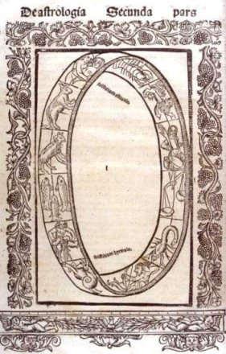
Practica compendiosa Lyons, Impressum in edibus Joannis Moylin als de Cambray, 1523, pseudo Lulle, De Astrologia secunda pars
Zodiaque :
Cercle imaginé dans le Ciel, et qu'on suppose posé de biais entre les deux parties du monde. Il est coupé à angles obliques de vingt-trois degrés et demi par l'Equateur au commencement des signes du Bélier et de la Balance. Le Zodiaque partage le Monde obliquement à l'égard de l'Equateur, en deux parties égales, dont l'une est appelée septentrionale, dans laquelle sont les signes septentrionaux; on nomme l'autre partie méridionale, et elle contient les signes méridionaux. L'obliquité du Zodiaque et le cours biaisant du Soleil contribuent à produire la diverse température des saisons. Ils servent à la génération des choses vivantes en montant vers notre Zénith, et à la corruption en descendant vers le Nadir. On divise ordinairement le Zodiaque en douze parties égales qu'on appelle Signes, dont la suite se compte d'occident en orient, en commençant par le point où le Soleil avançant de son mouvement propre, passe de la partie méridionale du globe à la partie septentrionale.
C'est le premier degré du premier signe du printemps appelle Aries ou le Bélier. Ces douze signes occupent les douze mois de l'année, et le Soleil entre tous les mois dans un de ces signes, dont les noms sont le Bélier ou Aries, le Taureau ou Taurus, les Gémeaux ou Gemini, l'Ecrevisse ou Cancer, le Lion ou Léo, la Vierge ou Virgo, la Balance ou Bilance, le Scorpion ou Scorpius, le Sagittaire ou Sagittarius, le Capricorne ou Capricornus, le Verseau ou Aquarius.
Les trois premiers occupent les trois mois du printemps, les trois suivants ceux de l'été, la Balance, le Scorpion et le Sagittaire se trouvent dans l'automne, et les trois derniers dans l'hiver. Les six premiers sont septentrionaux, et les six derniers méridionaux.
On appelle encore les six premiers ascendants, parce que le Soleil depuis le premier degré du Capricorne jusqu'à la fin des Gémeaux, monte et s'approche de notre Zénith, ou point central; et les six autres descendons, parce que le Soleil, en y passant, s'éloigne de notre Zénith.
Les Astrologues disent que lorsqu'une planète se trouve dans certains de ces signes, elle a plus de vertu, que ses influences sont plus efficaces, et ce signe est appelé exaltation; le signe opposé se nomme déaction ou chute, comme si la planète y perdait quelque chose de sa vertu. Ainsi lorsque le Soleil se trouve dans le Bélier, il est dans son exaltation, et la Balance est sa déjection. Le Taureau est l'exaltation de la Lune, et le Scorpion sa chute. Le Lion est l'exaltation de Mercure, et le Ver- seau sa déjection : la Vierge est aussi l'exaltation de Mercure et les Poissons sa chute, parce qu'excepté le Soleil et la Lune, chaque planète a deux signes d'exaltation et deux de déjection, comme elles ont aussi deux maisons.
La maison propre du Soleil est le Lion, celle de la Lune est l'Ecrevisse. Celles de Mercure sont les Gémeaux et la Vierge : le Capricorne et le Verseau sont celles de Saturne, dont la Balance et le Scorpion sont l'exaltation, et le Bélier et le Taureau la chute. Jupiter a pour maisons les Poissons et le Sagittaire, pour exaltation l'Ecrevisse, et pour déjection le Capricorne. Les maisons de Mars sont le Scorpion et le Bélier, son exaltation est le Capricorne, et sa chute l'Ecrevisse. Vénus a pour maison le Taureau et la Balance, pour exaltation le Verseau et les Poissons, et pour déjection le Lion et la Vierge.
Ces signes ont aussi des qualités relatives à celles des éléments. Trois sont ignés ou chauds, savoir le Bélier, le Lion et le Sagittaire; trois aériens, les Gémeaux, la Balance et le Verseau; trois aqueux, le Cancer, le Scorpion et les Poissons; trois terrestres, le Taureau, la Vierge et le Capricorne.
On en compte aussi six masculins et diurnes, qui sont le Bélier, les Gémeaux, le Lion, la Balance, le Sagittaire et le Verseau; et six féminins nocturnes, savoir le Taureau, l'Ecrevisse, la Vierge, le Scorpion, le Capricorne et les Poissons.
Les Egyptiens qui avaient observé les Astres et mesuré leur cours, partagèrent l'année en mois et en saisons, la réglant sur le cours du Soleil, et les mois sur celui de la Lune, et divi-sèrent le Ciel en douze parties, à chacune desquelles ils donnèrent le nom d'un animal. Lucien (Traité de l'Astrologie judiciaire) ajoute que les Egyptiens révéraient le b?uf Apis en mémoire du Taureau céleste, et que dans l'Oracle qui lui était consacré, on tirait les prédictions de la nature de ce signe, comme les Africains de celle du Bélier, en mémoire de Jupiter Ammon qu'ils adoraient sous cette figure.
Les Egyptiens crurent donc reconnaître quelques qualités semblables, quelque analogie dans ces signes et les animaux qui les représentaient; c'était sans doute ce qui leur avait aussi donné lieu d'inventer la fable dé la métamorphose des Dieux en animaux, pour éviter de tomber entre les mains de Typhon. . . Duxque gregis fit Jupiter, unde, recurvis; Nunc quoque formatur Libys et cum Cornibus Ammon.
Diane avait pris la figure d'une chatte. Fêle soror Ph?bii; Bacchus celle d'un bouc, Proies Semeleia capro; Junon celle d'une vache blanche, Niveâ Satumia vaccâ; Mercure se cacha sous celle de l'ibis, Cyllenius ibidis alis; Vénus sous celle d'un poisson, Pisce Venus latuit, ou, comme dit Manilius (Astr. l. 4) : Inseruitque suos squammosis piscibus ignés.
Ces qualités chaudes, froides, aqueuses ou sèches furent donc les raisons qui engagèrent les Egyptiens à donner aux planètes et aux signes du Zodiaque des noms d'animaux, et appelèrent ces constellations maisons ou lieux dans lesquels les planètes faisaient leur séjour passager pendant leur cours.
Quand Hermès ou ses Disciples eurent observé la même analogie entre les Planètes et les signes, ou du moins qu'ils eurent imaginé les mêmes qualités dans Vénus et le Taureau, par exemple, ils assignèrent le Taureau pour maison à Vénus, Aries pour celle de Mars, Gemini pour celle de Mercure, le Lion pour celle du Soleil, le Cancer pour celle de la Lune, et ainsi des autres.
Les Philosophes Disciples d'Hermès ont eu égard à toutes ces observations, et s'y sont conformés dans leurs raisonnements sur les sept planètes terrestres, ou les sept métaux. Ils les ont comparés aux planètes célestes, et leur ont supposé un cours qui forme l'année philosophique.
Paracelse dit qu'il faut faire parcourir à Saturne toutes les sphères des autres. Basile Valentin dit dans la 6e Clef :
« Remarque qu'il faut que tu soulevés la Balance céleste, et que tu mettes dans le côté gauche le Bélier, le Taureau, l'Ecrevisse, le Scorpion et le Capricorne, et dans le côté droit les Gémeaux, le Sagittaire, le Verseau, les Poissons et la Vierge; fais que le Lion porte or se jette dans le sein de la Vierge, et que ce côté-là de la Balance pesé plus que l'autre. Enfin que les douze signes du Lion Zodiaque faisant leurs constellations avec les sept Gouverneurs de l'Univers, se regardent tous de bon ?il, et qu'après que toutes les couleurs seront passées, la vraie conjonction se fasse, et le mariage, afin que le plus haut soit rendu le plus bas, et le plus bas le plus haut. »
Plusieurs Chymistes Hermétiques ont dit qu'il fallait commencer l'?uvre au printemps, par le cours du Soleil dans les signes du Bélier, du Taureau et de Gemini; d'autres en hiver, par le Capricorne, le Verseau et les Poissons. C'est que les uns en s'exprimant ainsi, ont eu égard à la matière qu'il faut prendre pour faire l'?uvre, et les autres aux premières opérations. Le Cosmopolite dit que leur mercure se tire du ventre d'Aries, au moyen dé leur acier, que dans un autre endroit il appelle aimant; et ajoute qu'il y a un second acier semblable au premier, créé par la Nature même : celui qui saura l'extraire des rayons du Soleil et de la Lune, trouvera ce que tant de gens cherchent.
Un de leurs hiéroglyphes représente Aidas portant sur ses épaules la sphère du Monde, [voir Azoth ou Occulta philosophia] sur laquelle est marquée une partie du Zodiaque, qui renferme les six signes dont j'ai parlé plus haut, et la figure du Soleil entre les signes des Poissons et du Bélier, et la Lune s'y trouve placée entre le Verseau et les Poissons. Le Cosmopolite, de concert avec les autres Philosophes et les Astrologues, placent les planètes différemment des Astronomes. Ceux-ci mettent Saturne le plus haut, ensuite Jupiter en descendant, puis Mars, le Soleil, Mercure, Vénus et la Lune.
« Afin que vous puissiez mieux concevoir comment les métaux s'allient et donnent leur semence, observez le Ciel et les sphères des planètes, dit le Cosmopolite, (Tract. 9). Voyez que Saturne est le plus élevé, Jupiter lui succède, puis Mars, ensuite le Soleil, Vénus, Mercure et la Lune. Considérez que les vertus des Planètes ne montent pas, mais descendent; et l'expérience nous apprend que de Vénus on ne fait pas Mars, mais bien de Mars Vénus, parce que celle-ci a sa sphère plus basse. De même on change aisément Jupiter en Mercure, parce que Jupiter est le second en descendant du Ciel, et Mercure le second en montant de la Terre; Saturne est le plus haut, et la Lune la plus basse. Le Soleil se trouvant au milieu, se mêle avec toutes les autres planètes, mais il ne saurait jamais être perfectionné par les inférieures. Sachez donc qu'il y a une grande correspondance entre Saturne et la Lune, au milieu desquels le Soleil se trouve placé; qu'il y a aussi beaucoup d'analogie entre Jupiter et Mercure, de même qu'entre Mars et Vénus, parce que le Soleil se trouve aussi entre ces planètes. »
L'Anonyme qui a joint une figure hiéroglyphique à la Table d'Emeraude d'Hermès, a placé les planètes un peu différemment; il n'a pas eu en vue de présenter leur cours, mais seulement leur position relative. Il a mis au haut et sur la même ligne le Soleil et la Lune; au-dessous du Soleil, Mars et Saturne; de l'autre côté sous la Lune, Vénus et puis Jupiter, et Mercure au milieu de toutes.
On voit par ce que nous avons dit jusqu'ici, que le Zodiaque des Philosophes n'est pas le même que le Zodiaque céleste, quoique le premier ait un grand rapport par ses qualités avec le second. Les signes des Philosophes sont les opérations de l'?uvre qu'il faut parcourir pour parvenir à leur automne, dernière saison de leur année, parce qu'elle est celle où ils recueillent les fruits de leurs travaux. Voyez SAISONS. Ces qualités aériennes, aqueuses, chaudes et terrestres, sont les états différons où se trouve leur matière pendant le cours des opérations. L'aérienne marque la volatilisation, l'humide ou aqueuse la dissolution, la terrestre et l'ignée la fixation. La dissolution et la putréfaction de leur or est leur hiver; pendant ce temps-là leur Soleil cueilli au printemps, parcourt les signes du Capricorne, du Verseau et des Poissons. De-là il passe dans les autres signes en rétrogradant toujours, dans chaque saison, de manière qu'à la fin il se trouve dans le lieu de son exaltation d'où il était parti, et puis dans sa propre maison, qui est le Lion porte or, comme l'a dit Basile Valentin. C'est la raison pour laquelle cet Auteur a dit qu'il fallait le mettre dans la Balance, et le jeter dans le sein de la Vierge, faisant en sorte que ce côté de la Balance pesé plus que l'autre, c'est-à-dire, que le fixe l'emporte sur le volatil. Tous les signes aériens et aqueux sont volatils, et les chauds de même que les terrestres sont fixes. L'air des Philosophes [voir Air des Sages : Phillaèthe, Introïtus, VI] est caché dans leur eau, et leur feu dans leur terre. Celui qui veut étudier la Philosophie Hermétique, doit donc faire l'objet de ses méditations du Zodiaque des Philosophes, observer bien sérieusement les qualités relatives de leurs planètes et de leurs signes; voir en quoi ils différent et en quoi ils se ressemblent, pourquoi l'une trouve son exaltation dans un signe qui sert de maison à l'autre, et d'où cela peut provenir; pourquoi on a placé une planète dans un signe plutôt que dans un autre, et enfin quel rapport ont ces signes avec les saisons Philosophiques, et la correspondance des planètes relativement à leur position, tant dans les signes, du Zodiaque, que dans le Ciel dont parle le Cosmopolite.
A suivre